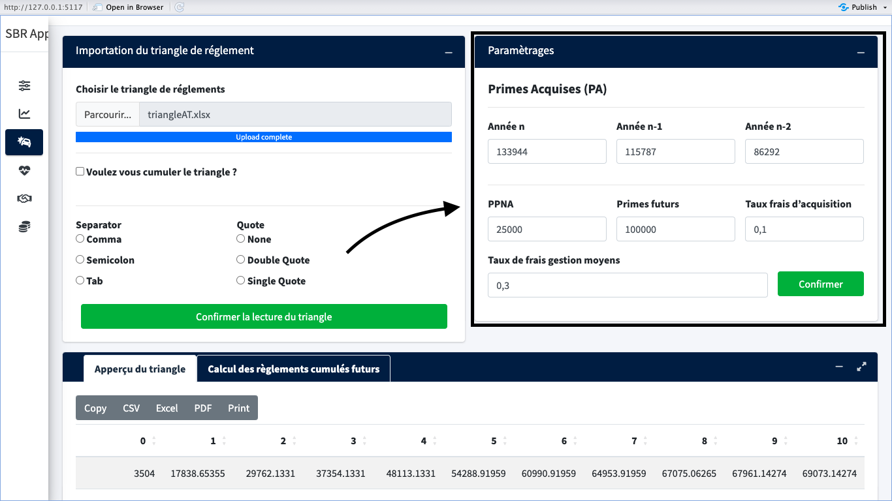
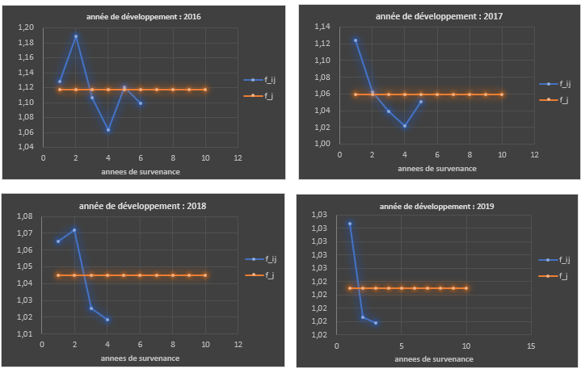

| Abréviation | Désignation |
|---|---|
| SBR | Solvabilité Basée sur les risques |
| ACAPS | Autorité de contrôle des Assurances et de la Prévoyance Sociale |
| AT | Accident de travail |
| RNN | Réseaux de neurones récurrents |
| LSTM | Long short-term memory |
| MASI | Moroccan All Shares index |
| CSR | Capital de Solvabilité Requis |
| BE | Best Estimate |
| PPNA | Provision pour primes non Acquises |
| PSAP | Provision pour Sinistre à Payer |
| BAM | Bank Al Maghrib |
| CSRB | Capital de solvabilité requis de base |
| CSRO | Capital de solvabilité requis relative au risque Opérationnel |
| MR | Marge de Risque |
| EDS | Equation Différentielle Stochastique |
| GBM | Geometric Brownian Motion |
| OPCVM | Organisme de Placement Collectif en Valeurs Mobilières |
| OPCI | Organisme de Placement Collectif Immobilier |
| OPCC | Organismes de Placement Collectif en Capital |
| FPCT | Fonds de Placement Collectifs en Titrisation |
Rapport PFE
Organisme d’accueil
Créée en 1996, A.R.M CONSULTANTS est le premier cabinet d’actuaires conseils indépendants au Maroc, en Afrique francophone et dans la région MENA, spécialisé dans l’Actuariat, la gestion des risques et l’ingénierie des assurances. Son capital est détenu à 100% par ses associés, ce qui assure au Cabinet une complète indépendance de tout organisme assureur. La présence d’A.R.M CONSULTANTS, qui regroupe des actuaires consultants de haut niveau, disposant d’une formation supérieure pluridisciplinaires et ayant une longue expérience dans les différents domaines du Risk-Management, de l’assurance et de la prévoyance sociale tant en France qu’au Maroc, présente une réelle opportunité pour :
- Les institutions financières qui souhaitent innover et maîtriser leurs risques, pour devenir leaders dans les domaines de l’assurance, de la bancassurance, de la réassurance, de la prévoyance sociale, de la retraite ou du crédit bancaire.
- Les entreprises et les établissements publics, qui souhaitent optimiser leurs performances en matière de gestion de leurs risques, de leurs assurances et de leurs engagements sociaux.
- Les administrations qui cherchent à élaborer des études actuarielles pour améliorer les systèmes existants de couvertures sociales ou mettre en place de nouveaux régimes de prévoyance sociale.
A.R.M CONSULTANTS s’est dotée d’équipes soudées et complémentaires, organisées autour de deux pôles distincts (Institutionnels et Corporat) qui lui permet de couvrir l’ensemble des spécificités actuarielles. Cette richesse, diversité et complémentarité des métiers permet à A.R.M CONSULTANTS de suivre en permanence l’ensemble des évolutions actuarielles et réglementaires. A.R.M CONSULTANTS a su développer et affirmer son savoir faire et son expertise grâce aux compétences et expériences de ses consultants, à sa spécialisation dans les domaines pointus de l’actuariat et du Risk-Management, et à son approche originale parfaitement adaptée au contexte Marocain et régional, basée sur un conseil extérieur qui est :
- Innovateur.
- Indépendant.
- International, par le biais de son partenariat avec des sociétés similaires de renommée internationale.
Liste des abréviations
Introduction
Suite aux crises multiples qui ont secoué le monde de la finance et de l’assurance notamment celle de 2008, les autorités se sont rendu compte de l’insuffisance de la supervision prudentielle. Cette dernière s’est montrée très chétive lors de la crise d’où la nécessité de mettre en place de nouvelles dispositions prudentielles plus robustes.
C’est dans ce contexte, à l’image de Bâle 2 pour la finance, que la Solvabilité 2 voit le jour dans le milieu de l’assurance. Cette réforme réglementaire européenne vient renforcer la précédente en adaptant au mieux les exigences de fonds propres des compagnies d’assurances et de réassurances aux risques qu’elles encourent.
Les insuffisances évoquées n’ont pas épargné le cadre prudentiel marocain. C’est ainsi que l’Autorité de Contrôle des Assurances et de la Prévoyance Sociale (ACAPS1) a adopter la norme de Solvabilité Basé sur les Risques (SBR) afin de tenir compte de la diversités des risques encourues par les compagnies d’assurances et de réassurances marocaines. La SBR s’articule autour de trois piliers :
- Le pilier I regroupe les exigences quantitatives, à savoir les règles de valorisation des actifs et des passifs ainsi que les exigences de capital et leur mode de calcul;
- Le pilier II porte sur les exigences qualitatives et définit les règles de gouvernance et de gestion des risques, en l’occurrence l’évaluation interne des risques de la solvabilité;
- Le pilier III concerne, quant à lui, les obligations de reporting à l’Autorité et de diffusion de l’information au public.
1 CHAPITRE I : Cadre réglementaire Marocain
1.1 Cadre réglementaire Marocain
Le Maroc est l’un des acteurs majeurs de l’assurance en Afrique. Ses compagnies ne cessent de gagner du terrain dans les marchés de la sous-région notamment en Afrique de l’ouest. Selon un rapport de l’Atlas Mag2, le Maroc est classé 2ème en Afrique et 49ème mondial avec un chiffre d’affaire de 5 343 millions USD en 2021.
| Pays | 2002 | 2006 | 2010 | 2014 | 2018 | 2019 | 2020 | 2021 | Evolution 2002/2021 |
|---|---|---|---|---|---|---|---|---|---|
| Afrique du sud | 19 575 | 40 743 | 48 575 | 50 502 | 49 002 | 46 421 | 41 110 | 51 215 | 162% |
| Kenya | 369 | 575 | 998 | 1 766 | 2 098 | 2 229 | 2 120 | 2 424 | 557% |
| Nigéria | 388 | 712 | 1 340 | 1 792 | 1 168 | 1 393 | 1 213 | 1 581 | 307% |
| Namibie | 321 | 563 | 887 | 995 | 1 026 | 1 305 | 788 | 867 | 170% |
| Côte d'Ivoire | 177 | 288 | 398 | 457 | 629 | 671 | 778 | 806 | 355% |
| Ghana (1) | - | 165 | 306 | 385 | 605 | 610 | 669 | 789 | 862% |
| Maurice | 207 | 318 | 508 | 779 | 627 | 516 | 533 | 523 | 153% |
| Angola | 129 | 680 | 828 | 1 055 | 450 | 374 | 338 | 494 | 283% |
| Autres pays | 1 278 | 2 019 | 3 045 | 12 385 | 13 769 | 13 763 | 14 332 | 15 491 | 1112% |
| Total | 22 444 | 46 063 | 56 885 | 70 116 | 69 374 | 67 282 | 61 881 | 74 190 | 230% |
Le Royaume doit se succès à la rigueur de son dispositif prudentiel qui se consolide de plus en plus. La SBR (Solvabilité basée sur les risques) est une réforme prudentielle qui vient en ce sens renforcer cette dynamique. elle vise à consolider la résilience des compagnies d’assurances face aux différents risques qu’elles encourent. Elle repose sur trois piliers : le pilier quantitatif, le pilier qualitatif et le pilier informatif3.
Le pilier quantitatif définit de nouvelles règles pour calculer le niveau de fonds propres minimum que les assureurs doivent détenir, en fonction de l’ensemble de leur activité et des risques associés. Il introduit également un bilan prudentiel, basé sur la valeur de marché des actifs et des passifs, et une classification des fonds propres éligibles4.
Le pilier qualitatif concerne la gouvernance et le contrôle interne des assureurs, ainsi que la gestion des risques. Il impose aux assureurs de mettre en place des fonctions clés, comme la fonction actuarielle ou la fonction de conformité, et de réaliser une évaluation interne des risques et de la solvabilité (ORSA5). Il applique aussi le principe de « personne prudente » pour la politique d’investissement des assureurs.
Le principe de « personne prudente »
Le principe de « personne prudente » est un principe qui s’applique à la politique d’investissement des entreprises d’assurance et de réassurance. Il signifie que les assureurs ne doivent investir que dans des actifs dont ils peuvent correctement identifier, mesurer, suivre, gérer, contrôler et déclarer les risques. Ce principe remplace les limitations d’actif qui existaient auparavant dans le cadre réglementaire. Il vise à garantir l’adéquation des actifs aux engagements envers les assurés, en tenant compte des critères de sécurité, qualité, liquidité et rentabilité.
Le pilier informatif porte sur le reporting et la publication d’information par les assureurs. Il vise à renforcer la transparence et la discipline de marché, en imposant aux assureurs de communiquer au régulateur et au public des informations sur leur situation financière, leur profil de risque et leur système de gouvernance.
La réforme SBR est entrée en vigueur progressivement au Maroc depuis 2019. Le régulateur du secteur, l’ACAPS (Autorité de contrôle des assurances et de la prévoyance sociale), a élaboré plusieurs textes réglementaires pour accompagner sa mise œuvre. Le dernier projet de circulaire en date concerne le second pilier relatif à la gouvernance6.
1.2 Piliers 1: Exigences quantitatives :
Sur les trois piliers de la normes SBR, notre rapport de stage se concentre essentiellement sur le pilier 1. Ce dernier spécifie toutes les dispositions réglementaires afin de satisfaire les exigences quantitatives de la norme. La détermination du capital de solvabilité requis (\(CSR\)) et la fixation des Fonds propres (\(FP\)) nécessite une analyse économique annuel du bilan prudentiel. L’organisme d’assurance ou de réassurance doit disposer d’une richesse nette suffisante pour faire face à ses risques dans \(X\%\)7 des situations possibles. Cela implique que sa richesse nette soit supérieure ou égale à l’exigence de solvabilité. Le bilan prudentiel SBR est un bilan qui reflète la situation économique des assureurs, et non pas uniquement leur situation comptable. Il se base sur une valorisation des actifs à leur prix de marché, c’est-à-dire le prix auquel ils pourraient être vendus ou transférés. Les passifs sont constitués essentiellement de dettes et des provisions techniques, qui représentent le coût estimé des engagements pris par les assureurs envers les assurés. Les provisions techniques se décomposent en deux éléments :
Le Best Estimate, qui n’est rien d’autre que la valeur actualisée des flux futurs attendus liés aux contrats en cours. L’actualisation se fait en utilisant une courbe de taux sans risque de référence, qui reflète les conditions du marché.
La marge de risque, qui correspond au coût du capital nécessaire pour couvrir les risques liés aux passifs jusqu’à leur extinction. Le coût du capital est calculé en appliquant un taux fixe aux exigences de fonds propres futures.
Le montant des provisions techniques à une influence importante sur la solvabilité des assureurs et sur leurs fonds propres. Plus les provisions techniques sont élevées, plus les assureurs doivent avoir de fonds propres pour couvrir leurs risques.

Le calcul du capital de solvabilité requis (SCR) se fait selon une formule standard qui prend en compte les différents types de risques auxquels les assureurs sont exposés. Il s’agit d’une méthode qui part du niveau le plus bas (les risques individuels) et qui remonte au niveau le plus haut (le risque global).
Les risques quantifiables sont regroupés en quatre catégories : les risques de marché, les risques de souscription, les risques de défaut et les risques opérationnels. Pour chaque catégorie, il existe deux façons de mesurer l’impact des risques sur les fonds propres des assureurs :
L’approche par scénario, qui consiste à appliquer des chocs soudains et extrêmes sur les actifs et les passifs des assureurs, et à observer la variation de leur valeur nette. Par exemple, on peut simuler une baisse des actions, une baisse des taux d’intérêt, un choc de mortalité, une hausse de la sinistralité, etc.
L’approche par facteurs, qui consiste à appliquer une formule mathématique qui détermine la charge en capital en fonction de paramètres prédéfinis. Par exemple, on peut utiliser un pourcentage des primes ou des provisions pour calculer le risque de souscription.
Les risques ne sont pas indépendants les uns des autres. Il faut donc tenir compte de la diversification entre les risques, c’est-à-dire du fait que certains risques peuvent se compenser ou s’atténuer mutuellement. Pour cela, on utilise des matrices de corrélation qui permettent d’agréger le SCR de chaque module et de chaque sous-module.
La réassurance est un moyen pour les assureurs de transférer une partie de leurs risques à un autre assureur. Elle réduit donc le SCR des assureurs cédants. Mais elle crée aussi un risque de contrepartie, c’est-à-dire le risque que l’assureur réassureur ne puisse pas honorer ses engagements en cas de sinistre. Il faut donc prendre en compte la réassurance dans la variation des fonds propres après choc.
Les assureurs peuvent aussi mettre en œuvre des actions de gestion pour limiter l’impact des chocs sur leurs passifs. Par exemple, ils peuvent modifier la tarification ou la distribution de leurs produits, ou ajuster leurs garanties ou leurs options. Ces actions de gestion sont prises en compte dans le calcul des provisions techniques après choc.
Enfin, les assureurs peuvent bénéficier d’un ajustement pour augmenter leur capacité d’absorption des pertes par les impôts différés. Cela signifie qu’en cas de perte, ils peuvent réduire leur base imposable et donc leur impôt à payer. Cet ajustement diminue le SCR des assureurs.
L’évaluation des provisions techniques est une étape importante du bilan prudentiel, car elle détermine le coût estimé des engagements pris par les assureurs envers les assurés. Il faut donc que cette évaluation soit encadrée par des règles et des principes, qui garantissent sa fiabilité et sa cohérence. Parmi ces règles et principes, on peut citer :
- L’approche réglementaire vs la liberté de modélisation : il s’agit du choix entre utiliser une méthode standardisée définie par le régulateur, ou utiliser une méthode propre à l’assureur, qui doit être validée par le régulateur.
- La qualité des données et la segmentation : il s’agit de s’assurer que les données utilisées pour l’évaluation sont complètes, exactes et pertinentes, et qu’elles permettent de distinguer les différents types de contrats et de risques.
- La cohérence des hypothèses avec l’expérience et la situation propre de l’institution : il s’agit de vérifier que les hypothèses retenues pour l’évaluation sont basées sur les données historiques et les caractéristiques spécifiques de l’assureur, et qu’elles sont sensibles aux variations des paramètres.
- La possibilité de recourir aux “dires d’experts” : il s’agit de la possibilité d’utiliser le jugement professionnel des experts actuariels pour compléter ou ajuster les données ou les hypothèses, en cas de manque d’information ou d’incertitude.
- La modélisation des frais récurrents en adéquation avec les frontières des contrats : il s’agit de prendre en compte les frais liés à la gestion des contrats, en fonction de leur durée et de leur contenu.
- L’intégration des “management actions” dans l’évaluation des risques Vie : il s’agit de prendre en compte les actions que l’assureur peut mettre en œuvre pour limiter l’impact des chocs sur ses passifs, comme par exemple modifier la tarification ou la distribution de ses produits, ou ajuster ses garanties ou ses options.
- La difficulté de contrôler les approches stochastiques : il s’agit de la difficulté à vérifier la pertinence et la robustesse des méthodes qui utilisent des simulations aléatoires pour évaluer les provisions techniques, notamment en ce qui concerne le générateur de scénarios économiques, l’estimation des paramètres, etc.
L’évaluation des risques financiers est aussi une étape importante du bilan prudentiel, car elle évalue la valeur de marché des actifs détenus par les assureurs. Ainsi, cette évaluation repose sur un certain nombre de principes parmi lesquels nous pouvons citer :
- La valorisation de l’immobilier et du non coté : il s’agit de déterminer le prix auquel les actifs immobiliers ou non cotés en bourse pourraient être vendus ou transférés sur le marché.
- La mise en transparence des OPCVM : connaître la composition détaillée des organismes de placement collectif en valeurs mobilières (OPCVM), qui sont des fonds d’investissement regroupant plusieurs actifs financiers.
- L’ajustement des chocs en fonction de la situation du marché financier et de la géographie du capital : il s’agit d’adapter l’intensité des chocs appliqués aux actifs financiers en fonction du contexte économique et du lieu où ils sont investis.
- La problématique des notations externes : il s’agit du problème lié à l’utilisation des notations attribuées par les agences externes pour évaluer le risque de défaut des actifs financiers, qui peuvent être biaisées ou imprécises.
- La définition des “groupes” et actifs “stratégiques” : il s’agit de définir quels sont les groupes ou les actifs financiers qui ont une importance particulière pour l’assureur, et qui doivent donc être traités différemment.
L’évaluation des impôts différés détermine le montant d’impôt que l’assureur peut économiser ou payer en cas de perte ou de bénéfice. L’évaluation passe par un test de recouvrabilité et la capacité d’absorption des pertes par les impôts différés. L’objectif est de vérifier que l’assureur dispose d’un bénéfice futur suffisant pour utiliser ses impôts différés actifs, c’est-à-dire le montant d’impôt qu’il peut économiser grâce à ses pertes passées ou présentes. Par contraposée, cela revient aussi de vérifier que l’assureur peut bénéficier d’un ajustement pour capacité d’absorption des pertes par les impôts différés, c’est-à-dire le montant d’impôt qu’il peut économiser grâce à ses pertes futures.
L’évaluation du capital de solvabilité requis (SCR) est la dernière étape du bilan prudentiel, elle détermine le montant minimum de fonds propres que l’assureur doit avoir pour couvrir ses risques. Il existe deux approches possibles pour calculer le SCR :
La formule standard, qui est une méthode standardisée définie par le régulateur, qui prend en compte les différents types de risques auxquels les assureurs sont exposés, et qui utilise des paramètres prédéfinis.
Le modèle interne, qui est une méthode propre à l’assureur, qui prend en compte les spécificités de son profil de risque, et qui utilise ses propres paramètres. Le modèle interne doit être validé par le régulateur.
2 CHAPITRE II : Construction de la courbe des taux
2.1 La construction de la courbe des taux zéro-coupon
Dans cette partie nous nous intéressons à la construction de la courbe des taux zéro-coupon dont nous avons besoin dans le reste de ce travaille afin d’actualiser les flux futurs entrant dans le calcul des différentes Best Estimate. Les taux zéro coupons sont extraits des taux moyens pondérés des transactions des bons de trésor publiées par la BANK AL MAGHRIB. Ces taux, sont en effet des taux monétaires pour les maturités inférieures ou égales à un an, alors qu’ils représentent un taux actuariel pour les maturités supérieures à un an. De plus, ils ne sont disponibles que pour certaines maturités.
| Date d'échéance | Transaction | Taux moyen pondéré | Taux moyen pondéré (%) | Date de la valeur | Maturité |
|---|---|---|---|---|---|
| 13/01/2023 | 322,40 | 0.02948 | 2,948 % | 30/12/2022 | 0.039 |
| 23/01/2023 | 120,47 | 0.02930 | 2,930 % | 30/12/2022 | 0.067 |
| 06/03/2023 | 30,15 | 0.02942 | 2,942 % | 30/12/2022 | 0.183 |
| 22/05/2023 | 168,01 | 0.03172 | 3,172 % | 30/12/2022 | 0.397 |
| 19/06/2023 | 829,46 | 0.03008 | 3,008 % | 30/12/2022 | 0.475 |
| 17/07/2023 | 210,28 | 0.03002 | 3,002 % | 30/12/2022 | 0.553 |
| 05/08/2023 | 116,18 | 0.03016 | 3,016 % | 30/12/2022 | 0.606 |
| 11/09/2023 | 349,31 | 0.03045 | 3,045 % | 30/12/2022 | 0.708 |
| 16/10/2023 | 57,86 | 0.03130 | 3,130 % | 30/12/2022 | 0.806 |
| 15/01/2024 | 62,41 | 0.02967 | 2,967 % | 30/12/2022 | 1.058 |
| 18/03/2024 | 100,37 | 0.02987 | 2,987 % | 30/12/2022 | 1.233 |
| 15/04/2024 | 261,82 | 0.02961 | 2,961 % | 30/12/2022 | 1.311 |
| 17/06/2024 | 53,19 | 0.02991 | 2,991 % | 30/12/2022 | 1.486 |
| 15/07/2024 | 149,79 | 0.02989 | 2,989 % | 30/12/2022 | 1.564 |
| 16/09/2024 | 69,58 | 0.03050 | 3,050 % | 30/12/2022 | 1.739 |
| 20/10/2025 | 100,50 | 0.02980 | 2,980 % | 30/12/2022 | 2.847 |
| 20/04/2026 | 138,51 | 0.02941 | 2,941 % | 30/12/2022 | 3.353 |
| 16/04/2029 | 118,63 | 0.03003 | 3,003 % | 30/12/2022 | 6.386 |
| 18/06/2029 | 115,57 | 0.03011 | 3,011 % | 30/12/2022 | 6.561 |
| 16/06/2031 | 274,67 | 0.03126 | 3,126 % | 30/12/2022 | 8.583 |
| 18/07/2033 | 317,93 | 0.03211 | 3,211 % | 30/12/2022 | 10.703 |
| 17/07/2034 | 61,82 | 0.03346 | 3,346 % | 30/12/2022 | 11.714 |
| 16/07/2035 | 356,46 | 0.03279 | 3,279 % | 30/12/2022 | 12.725 |
| 18/08/2036 | 36,32 | 0.03374 | 3,374 % | 30/12/2022 | 13.833 |
| 16/08/2038 | 135,19 | 0.03433 | 3,433 % | 30/12/2022 | 15.856 |
| 16/04/2040 | 15,09 | 0.03488 | 3,488 % | 30/12/2022 | 17.547 |
| 19/02/2046 | 21,09 | 0.03614 | 3,614 % | 30/12/2022 | 23.478 |
| 14/02/2050 | 13,91 | 0.03789 | 3,789 % | 30/12/2022 | 27.522 |
| 20/02/2051 | 135,76 | 0.03612 | 3,612 % | 30/12/2022 | 28.553 |
La construction de la courbe des taux zéro-coupon passe par les étapes suivantes :
- 1-ère étape : Transformation des taux monétaires en taux actuariels.
- 2-ème étape : Interpolation linéaire afin d’obtenir des taux actuariels pour des maturités pleines.
- 3-ème étape : Calcule des taux zéro coupons à partir des taux actuariels des maturités pleines par la Méthode du Bootstrap.
- 4-ème étape : Extrapolation de la courbe des taux zéro-coupon pour des maturités non observées lointaines par la méthode de Smith-Wilson.
Transformation des taux monétaires en taux actuariels
Cette étape consiste à transformer les taux monétaires à des taux actuariels en utilisant la relation suivante :
\[ T_a=(1+\frac{n}{365}*T_m )^{\frac{365}{n}}-1 , \tag{1}\]
avec :
\(T_a\) : Le taux actuariel.
\(T_m\) : Le taux monétaire.
\(n\) : Le nombre de jours entre la date de valeur et la date d’échéance.
\(\frac{365}{n}\) : La maturité.
Après l’application de cette formule sur Les données de marché marocain (publiées par la BAM), nous avons obtenu les résultats cités dans le tableau suivant :
| Maturité | Taux actuariel | Taux actuariel (%) |
|---|---|---|
| 0.039 | 0.03032 | 3,032% |
| 0.067 | 0.03012 | 3,012% |
| 0.183 | 0.03020 | 3,02% |
| 0.397 | 0.03248 | 3,248% |
| 0.475 | 0.03075 | 3,075% |
| 0.553 | 0.03065 | 3,065% |
| 0.606 | 0.03077 | 3,077% |
| 0.708 | 0.03102 | 3,102% |
| 0.806 | 0.03184 | 3,184% |
| 1.058 | 0.02967 | 2,967% |
Interpolation linéaire de la courbe des taux actuariels
En réalité, nous ne disposons que des taux actuariels de maturités ayant des valeurs décimales, le but de cette étape est donc la détermination des taux actuariels avec des maturités pleines en utilisant une interpolation linéaire.
Cette opération consiste à déterminer le \(DPL\) qui correspond au dernier point liquide. Il est déterminé de sorte que le volume cumulé des obligations dont les échéances sont supérieures au DPL et inférieur à \(6\%\) du volume total des transactions prises en compte pour la construction de la courbe des taux zéro-coupon. Il correspond aussi à dernière maturité observable.
La formule d’interpolation pour toute maturité \(j\) allant de \(1, 2,\dots, DPL\) est la suivante :
\[ t_j=t_i+\frac{t_{i+1 }-t_i}{n_{i+1 }-n_i} \times (j-n_i )\;, \tag{2}\]
avec :
- \(t_j\) : Taux actuariels de maturité pleine j compris entre les maturités n_i et n_(i+1),
- \(t_i\) : Taux actuariels de maturités n_i.
| Maturité | Taux actuariel | Taux actuariel (%) |
|---|---|---|
| 1 | 0.03017 | 3,017% |
| 2 | 0.03034 | 3,034% |
| 3 | 0.02968 | 2,968% |
| 4 | 0.02954 | 2,954% |
| 5 | 0.02975 | 2,975% |
| 6 | 0.02995 | 2,995% |
| 7 | 0.03036 | 3,036% |
| 8 | 0.03093 | 3,093% |
| 9 | 0.03143 | 3,143% |
| 10 | 0.03183 | 3,183% |
la méthode de Bootstrap
La méthode Bootstrap est une technique de reconstitution de la courbe zéro-coupon pas à pas, en déterminant les taux zéro-coupon à partir des taux actuariels, en faisant l’hypothèse que le prix théorique d’une obligation correspond à la somme de ses flux futures actualisés aux taux zéro-coupon de l’échéance de chaque flux. Ainsi, on suppose que les prix des obligations des Bons du trésor sont au pair, c’est-à-dire que le prix d’émission des obligations des bons du trésor et leur valeur nominale sont égaux.
- Pour une maturité inférieure ou égale a un an :
Le taux zéro-coupon est donc le taux actuariel de même maturité. Car aucun coupon n’est payé avant l’échéance.
- Pour une maturité supérieure à un an :
Le taux zéro-coupon est calculé par la formule suivante :
\[ R_n = \sqrt[n]{\frac{1+t_n}{1-t_n \times \sum_{i=1}^{n-1} \frac{1}{(1+R_i)^{i}}}} - 1 \quad . \tag{3}\]
En effet, on a supposé que le prix théorique d’une obligation correspond à la somme de ses flux futures actualisés aux taux zéro-coupon de l’échéance de chaque flux:
\[ P = \frac{t_n * N }{(1+R_1)} + \frac{t_n * N }{(1+R_2)^2}+ \dots + \frac{N +t_n * N }{(1+R_n)^n}, \tag{4}\]
avec :
\(P\) : Prix d’émission du bon de trésor,
\(N\) : Valeur Nominale du bon de trésor.
Et puisque nous avons supposé que les obligations des Bons du trésor sont émises au pair, c’est-à-dire que le prix d’émission des obligations des bons du trésor et leur valeur nominale sont égaux \((P = N)\), on en déduit l’expression:
\[ 1 = \frac{t_n }{(1+R_1)} + \frac{t_n }{(1+R_2)^2}+ \dots + \frac{1+ t_n }{(1+R_n)^n} \] \[ \implies \frac{1+ t_n }{(1+R_n)^n} = 1- t_n * \sum_{i=1}^{n-1} \frac{1}{(1+R_i)^i} \]
\[ \implies (1+R_n)^n = \frac{1+ t_n}{1- t_n * \sum_{i=1}^{n-1} \frac{1}{(1+R_i)^i}}\;. \]
On en arrive à la conclusion :
\[ R_n = \sqrt[n]{\frac{1+t_n}{1-t_n * \sum_{i=1}^{n-1} \frac{1}{(1+R_i)^{i}}}} - 1 \]
| Maturité | Taux zéro coupon | Taux zéro coupon (%) |
|---|---|---|
| 1 | 0.03017 | 3,017% |
| 2 | 0.03034 | 3,034% |
| 3 | 0.02966 | 2,966% |
| 4 | 0.02952 | 2,952% |
| 5 | 0.02975 | 2,975% |
| 6 | 0.02996 | 2,996% |
| 7 | 0.03041 | 3,041% |
| 8 | 0.03104 | 3,104% |
| 9 | 0.03160 | 3,16% |
| 10 | 0.03205 | 3,205% |
Extrapolation de la courbe des taux zéro-coupon : Méthode de Smith-Wilson
La méthode Smith-Wilson est une méthode d’extrapolation de la courbe des taux d’intérêt développée par les chercheurs Smith et Wilson en 1995, et est utilisée pour extrapoler les taux à long terme. Son principe est d’ajuster une courbe mathématique à la courbe des taux observée sur le marché, en utilisant une fonction spécifique appelée “fonction de Smith-Wilson”. Cette fonction est une combinaison de deux termes : le premier terme représente une fonction de décroissance exponentielle, qui est utilisée pour modéliser la partie courte de la courbe des taux ; le second terme est une fonction polynomiale qui est utilisée pour modéliser la partie longue de la courbe des taux.
Une fois que la fonction de Smith-Wilson a été ajustée à la courbe des taux, elle peut être utilisée pour extrapoler les taux pour des maturités plus longues que celles disponibles sur le marché. Cette extrapolation est possible car la fonction de Smith-Wilson est conçue pour s’adapter de manière continue à la fois à la partie courte et à la partie longue de la courbe des taux.
dans ce modèle le taux à terme à long terme est un paramètre d’entrée fixe qui ne varie pas dans le temps à mesure qu’évoluent les prix des obligations. Elle permet aux taux à terme à long terme de converger vers le taux « infini »(Ultimate Forward Rate) choisi et elle offre une base solide pour couvrir le risque de taux d’intérêt à long terme.
Les paramètres d’entrée sont les suivants :
- le UFR (Ultimate Forward Rate)
- \(\alpha\) la vitesse de convergence vers le UFR.
En fait, sur le marché on observe les prix zéro-coupons de différentes maturités \(u_1, u_2,\dots., u_N\) alors Smith-Wilson suppose que le facteur d’actualisation $P() $ est déterminé par:
\[ P(\tau) = e^{-UFR * \tau} + \sum_{j=1}^N \gamma_j * W(\tau , \mu_j) \quad, \tag{5}\]
où:
\[ W(\tau , \mu_j) = e^{-UFR * (\tau + \mu_j )} * [ \alpha * min(\tau , \mu_j) - 0,5 *e^{-\alpha*max(\tau , \mu_j)}*(e^{\alpha*min(\tau , \mu_j)}- e^{-\alpha*max(\tau , \mu_j)} ) ] \quad , \]
avec :
- \(W\) représente un ensemble de fonctions à noyau pour chaque prix d’obligation observable d’entrée.
- \(\alpha\) : la vitesse de convergence vers le UFR.
- \(N\): le nombre d’obligations ZC dont le prix est observé sur le marché.
- \(u_j\): la j-ème maturité disponible. .
- \(\gamma_j\) : les inconnus à ajuster par rapport à la courbe des taux zéro-coupon disponible avant extrapolation.
Pour déterminer ces inconnus, on fixe d’abord \(UFR\) et \(\alpha\),le vecteur \(\gamma\) s’obtient comme solution d’un système d’équations linéaires définies par l’expression du prix de chaque obligation ZC considérée.
Soit :
\[ m_j = P(\mu_j) = e^{-UFR * \mu_j} + \sum_{j=1}^N \gamma_j * W(\tau , \mu_j) \quad , \]
sous forme matricielle :
\[ m = P = µ + γ ∗ W ⇒ γ = W^{−1}(P − µ), \]
avec:
\(m = (m_1, m_2,\dots, m_N)^T\)
\(P = (P(u_1) , P(u_2),\dots, P(u_N))^T\)
\(µ = (e^{−UFR∗u_1}, e^{−UFR∗u_2},\dots,e^{-UFR*u_N})^T\)
$$ W = \[\begin{bmatrix} W_{11} \; \; \;\dots &W_{1N} \\ \qquad \; \; \; . . . . . ..... \\ W_{N1} \; \; \;\dots &W_{NN} \end{bmatrix}\]$$
\[ W{ij} = W (u_i, u_j) \qquad i,j = 1 ,\dots, N \quad \; \]
Après la détermination des inconnus, on passe au calcul des prix zéro-coupon correspondants aux maturités pleines, et finalement déduire les taux zéro-coupon correspondants à ces maturités par la relation suivante : \[ R(t) = (\frac{1}{P(t)})^{\frac{1}{t}} - 1 \tag{6}\]
3 CHAPITRE III : Valorisation de l’actif
3.1 Directives de l’ACAPS
Selon les directions de l’autorité de contrôle des Assurances et de la Prévoyance Sociale, les actifs doivent être évaluer comme suit :
- Titres OPCVM et OPCI : Dernière valeur liquidative.
- Titres OPCC et FPCT : Dernière valeur connue.
- Titres de créances négociables, obligations et bons : Valeur de marché.
- Immobilisations corporelles : Valeur comptable.
- Autres créances : Valeur comptable.
- Immobilisations en non-valeur : Valeur nulle.
- Immobilisations incorporelles : Valeur nulle.
- Actifs immobiliers hors OPCI : Valeur de transaction (sinon valeur comptable).
- Autres actifs : Valeur d’expert (sinon valeur comptable)
Pour les actions cotées à la bourse de Casablanca, ils sont valorisées à leur dernier cours coté avant la date d’inventaire, ou le moyenne des cours côtés des trois derniers mois précédant la date d’inventaire, si le volume ou la quantité journaliers moyens des transactions sur les 3 derniers mois précédant la date d’inventaire sont inférieurs aux seuils fixés par L’ACAPS.
Modélisation du prix des actions
Le prix d’une action ou plus communément appelé cours d’une action représente le prix auquel elle est achetée ou vendue sur un marché boursier. Ce prix fluctue en fonction de l’offre et de la demande pour cette action, ainsi que de nombreux autres facteurs tels que les performances financières de l’entreprise, les conditions économiques générales et les évènements mondiaux. Autrement dit, le cours de l’action représente la valeur perçue de l’entreprise par les investisseurs à un moment.
Ainsi, si la valeur présente de l’action est une donnée du marché, sa valeur future quant à elle est aléatoire d’où la nécessité de sa modélisation.
Modèle de Black-Scholes
Le modèle de Black-Scholes modèle a été développé en 1973 par Fischer Black, Robert Merton et Myron Scholes, qui ont reçu le prix Nobel d’économie en 1997 pour leurs travaux. Ce modèle est l’un des concepts les plus importants dans la théorie de la finance modèle. Il permet d’évaluer le prix d’une option européenne en fonction de son type et du prix de l’actif sous-jacent. Le modèle repose sur plusieurs hypothèses dont l’une d’entre elle est que le cours de l’actif sous-jacent suit un mouvement géométrique avec une volatilité constante.
En termes mathématiques, le prix d’une action peut donc être représenté comme une fonction scalaire du temps actuel \(t\). Nous noterons cette fonction \(S(t)\). Notons qu’en termes techniques, \(S(t)\) est une série temporelle, qui bien qu’apparemment continue (avec continuité \(C[0]\)), est en réalité discontinue (sujette de sauts). De plus, ce n’est pas une fonction dont la dérivée première n’existe pas.
Nous allons modéliser \(S(t)\) comme une variable stochastique. Dans cette situation, nous sommes tenus de ne pas utiliser les outils standards de calcul (tels que les séries de Taylor, les dérivées, l’intégrale de Riemann), mais sont plutôt contraints d’utiliser les outils de calculs stochastiques (tels que le lemme d’Itô, la dérivée de Radon-Nikodym, Riemann -Stieltjes intégrale) pour faire avancer notre modélisation.
Dans ce contexte, le comportement de la variable \(S(t)\) peut être décrit pour une Équation Différentielle Stochastique (\(EDS\)). Dans le cas des actions, l’\(EDS\) standard utilisée pour modéliser la trajectoire du cours est appelé Mouvement Brownien Géométrique (\(GBM\) : Geometric Brownian Motion). Sous la mesure de probabilité dite réelle \(P\), le mouvement brownien géométrique (\(GBM\)) est formellement représenté en temps continu de la manière suivante : 8
\[ dS_t = \mu S_t dt + \sigma S_t dW^P_t \quad , \tag{7}\]
où \(\mu\) représente le drift, \(\sigma\) la volatilité et \(W^P\) est mouvement brownien standard sous la probabilité \(P\).
Cependant, dans la littérature, cette représentation n’est pas utilisée pour la valorisation des produit dérivés. Il est remplacé par la représentation suivante sous la mesure de probabilité neutre au risque \(\mathbb{Q}\):
\[ dS_t = r S_t dt + \sigma S_t dW^\mathbb{Q}_t \tag{8}\]
Dans l’Equation 8 précédente, nous avons remplacé \(\mu\) par le taux d’intérêt sans risque \(r\), \(\sigma\) est la volatilité et \(dW\) est l’incrément d’un processus de Wiener. L’équation 2 peut en outre être représentée comme suit :
\[ \frac{dS_t}{S_t} = r dt + \sigma dW^\mathbb{Q}_t \]
Dans cette dernière équation, nous pouvons identifier le terme \(\frac{dS_t}{S_t}\) du côté gauche de l’équation comme le rendement des capitaux propres. Ainsi, les deux termes du côté droit de l’équation sont un « terme de dérive » et un « terme de volatilité ». Chacun de ces termes est « mis à l’échelle » par les paramètres μ et σ, qui sont calibrés sur les prix actuels du marché des instruments négociés, tels que les options d’achat et de vente.
Intéressons nous aux solutions \((S_t)_{t\geq 0}\) de l’EDS Equation 8 qui peut être réécrite comme suit :
\[ S_t = x_0 + \int_{0}^{t}S_s(\mu dt + \sigma dW^\mathbb{P}_s)\;;\;\;avec\; S_0=x_0 \tag{9}\]
Puisque \(\mu\) et \(\sigma\) sont positifs, cela signifie que l’on cherche un processus adapté \((S_t)_{t\geq 0 }\) tel que les intégrales \(\int_0^t S_s\) et \(\int_0^t S_s dW^\mathbb{P}_s\) aient un sens, et qui vérifie l’Equation 9, pour chaque \(t\).
Commençons par un calcul formel en posant \(Y_t = log(S_t)\) où \(S_t\) est une solution de l’Equation 9. \(S_t\) est un processus d’Itô avec \(K_s = \mu S_s\) et \(H_s = \sigma S_s\). Appliquons la formule d’Itô à \(f(x) = log(x)\). On obtient, en supposant \(S_t\) positif :
\[ log(S_t) = log(S_0) + \int_{0}^{t} \frac{dS_s}{S_s}+\frac{1}{2} \int_{0}^{t}\frac{-1}{S_s^2}\sigma^2S_s^2 ds \quad , \] soit, en utilisant Equation 7 :
\[ Y_t = Y_0 + \int_0^t (\mu - \frac{\sigma^2}{2})ds + \int_0^t\sigma dW_s \quad , \]
puis
\[ Y_t = log(S_t) = log(S_0)+ (\mu - \frac{\sigma^2}{2})t + \sigma W_t \quad , \] ainsi :
\[ S_t = S_0 \exp((\mu - \frac{\sigma^2}{2})t + \sigma W_t) \quad , \tag{10}\] est solution de l’EDS.

Réseaux de neurones récurrents
Dans cette partie on va s’intéresser à l’entraînement d’un modèle de réseaux de neurones récurrents (RNN pour recurrent neural network en anglais), plus spécifiquement au modèle LSTM (Long short-term memory) avec des données historiques de l’indice MASI (Moroccan All Shares Index) afin prédire les cours journaliers de clôture.
Le (RNN) est un type de réseau neuronal artificiel qui utilise des données séquentielles ou des données de séries chronologiques. Ces algorithmes d’apprentissage en profondeur ( Deep Learning ) sont couramment utilisés pour les problèmes ordinaux ou temporels, tels que la traduction linguistique, traitement automatique des langues ( NLP ), la reconnaissance vocale et le sous-titrage d’images, la prédiction des séries chronologiques,\(\dots\)
Les réseaux de neurones récurrents utilisent des données de formation pour apprendre. Ils se distinguent par leur mémoire car ils prennent des informations d’entrées précédentes pour influencer l’entrée et la sortie actuelles. Alors que les réseaux de neurones profonds traditionnels supposent que les entrées et les sorties sont indépendantes les unes des autres, la sortie des réseaux de neurones récurrents dépend des éléments antérieurs de la séquence. Alors que les évènements futurs seraient également utiles pour déterminer la sortie d’une séquence donnée.
Une autre caractéristique distinctive des réseaux récurrents est qu’ils partagent des paramètres à travers chaque couche du réseau, alors que les réseaux feedforward (des réseaux de neurones artificiels qui traitent les informations dans une seule direction) ont des poids différents sur chaque nœud. Les RNN partagent le même paramètre de poids dans chaque couche du réseau. Cela dit, ces poids sont toujours ajustés au cours des processus de rétropropagation et de descente de gradient pour faciliter l’apprentissage par renforcement.
Un inconvénient des RNN standard est le problème du gradient de fuite, dans lequel les performances du réseau de neurones souffrent car il ne peut pas être formé correctement. Cela se produit avec des réseaux de neurones en couches profondes, qui sont utilisés pour traiter des données complexes.
Les RNN standard qui utilisent une méthode d’apprentissage basée sur le gradient se dégradent à mesure qu’ils grandissent et deviennent plus complexes. Le réglage efficace des paramètres aux premières couches devient trop long et coûteux en calculs.
Une solution au problème s’appelle les réseaux de mémoire longue à court terme (LSTM), que les informaticiens Sepp Hochreiter et Jurgen Schmidhuber ont inventés en 1997. Les RNN construits avec des unités LSTM classent les données en cellules de mémoire à court terme et à long terme. Cela permet aux RNN de déterminer quelles données sont importantes et doivent être mémorisées et renvoyées dans le réseau, et quelles données peuvent être oubliées.
Dans notre cas, Nous nous sommes focalisés sur l’application du modèle LSTM sur les données de l’indice MASI. Notre échantillon comporte \(5000\) observations journalières du cours d’ouverture, cours de clôture, le cours le plus bas, le cours plus haut et la variation du cours entre deux dates successives.
| Date | Dernier | Ouverture | PlusHaut | PlusBas | variation |
|---|---|---|---|---|---|
| 2022-01-24 | 13753.50 | 13783.81 | 13815.59 | 13753.05 | -0.0022 |
| 2022-01-21 | 13783.81 | 13777.59 | 13812.43 | 13769.84 | 0.0005 |
| 2022-01-20 | 13777.59 | 13737.71 | 13814.82 | 13734.73 | 0.0029 |
| 2022-01-19 | 13737.71 | 13768.05 | 13817.94 | 13734.76 | -0.0022 |
| 2022-01-18 | 13768.05 | 13770.78 | 13815.37 | 13767.98 | -0.0002 |
| 2022-01-17 | 13770.78 | 13784.31 | 13784.31 | 13748.24 | -0.0010 |
| 2022-01-14 | 13784.31 | 13588.24 | 13784.72 | 13551.04 | 0.0144 |
| 2022-01-13 | 13588.24 | 13531.26 | 13588.24 | 13506.23 | 0.0042 |
| 2022-01-12 | 13531.26 | 13486.31 | 13532.13 | 13481.22 | 0.0033 |
| 2022-01-10 | 13486.31 | 13477.25 | 13503.15 | 13441.78 | 0.0007 |
| 2022-01-07 | 13477.25 | 13368.77 | 13477.25 | 13335.97 | 0.0081 |
| 2022-01-06 | 13368.77 | 13290.62 | 13369.02 | 13290.62 | 0.0059 |
| 2022-01-05 | 13290.62 | 13278.48 | 13306.00 | 13269.36 | 0.0009 |
| 2022-01-04 | 13278.48 | 13296.29 | 13328.50 | 13278.48 | -0.0013 |
| 2022-01-03 | 13296.29 | 13358.32 | 13363.06 | 13277.80 | -0.0046 |
La figure suivante donne un aperçu de Dernier cours de cet indice entre les années 2002 et 2022.
Les réseaux de neurones récurrents sont réputés être plus performants comparés aux autres méthodes en terme de prédiction de série chronologique. Ainsi, il est tout naturel de s’attendre à un excellent score lors d’une application du modèle LSTM. Nous allons voir plus de détails sur la méthode de ce modèle sur le langage python la Section 7.1.
Le graphique suivant est une représentation conjointe du dernier cours observé (en bleu) et le cours prédit (en orange) par notre modèle sur la même période.

Une remarque flagrante est que les deux courbes sont presque confondues. Ce constat s’explique par la faiblesse de la valeur du RMSE qui vaut \(29,44\).
La racine de l’erreur quadratique moyenne (en anglais, root-mean-square error ou RMSE) est une mesure de l’écart type des résidus. Plus précisément, elle mesure la différence entre les valeurs prédites par le modèle et les valeurs observées. En terme de cohérence et de précision, le modèle LSTM nous a donné de meilleurs résultat comparé à celui de Black & Scholes.
4 CHAPITRE IV : Valorisation des provisions techniques prudentielles
4.1 Généralité
Les provisions techniques prudentielles bruts de réassurance sont valorisées en considérant les contrats dont l’engagement de l’entreprise est en cours à la date d’inventaire. Les contrats d’assurance non-vie à tacite reconduction dont la date d’effet intervient postérieurement à la date d’inventaire et dont le préavis de résiliation a expiré à cette date sans qu’il y ait une demande de résiliation sont également pris en considération.
Elles sont évaluées comme suit :
\[ PT = BE_{eng} + BEFG + MR, \tag{11}\]
avec :
\(PT\) : la provision technique.
\(BE_{eng}\) : La meilleure estimation des engagements correspond à la somme probabilisée et actualisée de flux de trésorerie futurs afférents aux engagements de l’entreprise d’assurances et de réassurance au titre des contrats souscrits et déterminée, selon la nature des opérations d’assurance.
\(BEFG\) : La meilleure estimation des frais de gestion correspond à la somme probabilisée et actualisée des flux de frais de gestion des contrats et déterminée, selon la nature des opérations d’assurance.
\(MR\) : La marge de risque correspond au coût d’immobilisation du capital de solvabilité requis afférent aux engagements garantis. Elle est calculée, séparément pour les engagements des opérations d’assurances vie et rentes découlant des opérations non vie ainsi que pour les engagements des opérations non vie.
Opérations d’assurance vie, décès ou capitalisation
L’assurance vie est un instrument financier largement utilisé qui offre une protection et des avantages financiers à long terme. Il s’agit d’un contrat entre un assuré et un assureur, dans lequel l’assuré paie régulièrement des primes en échange d’une garantie de versement d’un capital ou d’une rente à un bénéficiaire désigné en cas de décès de l’assuré. Cependant, l’assurance vie ne se limite pas uniquement à la protection en cas de décès, elle peut également offrir des avantages supplémentaires tels que l’accumulation d’épargne, la constitution d’un capital pour la retraite ou des possibilités de planification successorale.
L’assurance vie fonctionne sur le principe de la mutualisation des risques. Les primes payées par les assurés sont regroupées pour former un fonds commun, à partir duquel les prestations sont versées aux bénéficiaires advenant le décès de l’assuré. Ce mécanisme permet de protéger financièrement les proches et de garantir une sécurité financière dans des moments difficiles.
L’une des caractéristiques clés de l’assurance vie est sa nature flexible. Les polices d’assurance vie peuvent être adaptées aux besoins spécifiques de chaque individu, en termes de durée, de montant de la prime et de type de couverture. Il existe différents types d’assurance vie, tels que l’assurance vie temporaire (ou temporaire renouvelable), l’assurance vie entière, l’assurance vie universelle et l’assurance vie variable, offrant ainsi une gamme d’options pour répondre aux objectifs financiers et aux préférences de chacun.
Meilleure estimations des engagements (\(BE_{eng}\))
Pour les opérations d’assurance vie, décès ou de capitalisation hors unités de compte, la meilleure estimation des engagements comprend la meilleure estimation des garanties probabilisées et les bénéfices discrétionnaires futurs.
\[ BE_{eng} = BEGP + BDF \quad , \tag{12}\]
avec :
- \(BEGP\): la meilleure estimation des garanties probabilisées.
- \(BDF\): les bénéfices discrétionnaires futurs.
Meilleure estimation des garanties probabilisées
La meilleure estimation des garanties probabilisées est calculée garantie par garantie et tête par tête, en actualisant les flux de trésorerie futurs probabilisés, afférents aux engagements garantis à la date d’inventaire. Toutefois, l’entreprise d’assurances et de réassurance peut procéder à une agrégation en retenant des critères homogènes, notamment l’âge et ce, après accord de l’Autorité.
$$ BEGP = _{t=0}^{t=N} ,
$${#eq-gbmp}
avec :
\(Enc_{t}\): Les encaissements à la date \(t\) qui correspondent aux engagements des assurés.
\(Dec_{t}\): Les décaissements à la date \(t\). qui correspondent aux règlements de toutes prestations garanties au titre des contrats, y compris les rachats. Ils sont déterminés en tenant compte des engagements contractuels et en utilisant, le cas échéant, les bases techniques suivantes :
La table de mortalité: La table de mortalité TV 88-90 pour les assurances en cas de vie ou la table de mortalité TD 88-90 pour les assurances en cas de décès (prévues à l’annexe), auxquelles l’entreprise d’assurances et de réassurance peut substituer une table de mortalité d’expérience, matérialisant la mortalité propre à la population de ses assurés et ce, après accord de l’Autorité ;
La table de rachat en montant.
La table de résiliation.
Un taux de sortie en rente.
Remarque
Les flux de trésorerie futurs probabilisés précités sont déterminés en considérant un horizon de projection suffisant pour la couverture de l’ensemble de la durée de vie des engagements à la date d’inventaire.
Exemple:
Un contrat d’assurance mixte à prime unique sur \(N\) années est un type de contrat d’assurance-vie qui permet de financer l’assurance-vie en une seule fois. Cela signifie que vous payez une prime unique pour couvrir toute la durée du contrat. Ce type de contrat est destiné aux personnes qui disposent d’un capital et souhaitent diversifier leurs placements tout en protégeant leurs proches. Dans sa variante « mixte », elle permet de réaliser un placement rémunérateur tout en assurant une couverture financière à ses proches.
Si on prend l’exemple d’un contrat d’assurance-vie mixte de capital en cas de vie égale au capital en cas de décès \(K\). Soit \(q_{x+t}\) la probabilité qu’un individu d’âge \(x\) lors de la souscription décéde entre \(x+t\) et \(x+t+1\). On note \(NbP_t\) le nombre de police en début de période \(t\) et \(r_s\) le taux ZC. La prestation correspondante à ce contrat en date t : \[ Dec_{t} = K \times NbP_t \times q_{x+t} \times (1+r_t)^t \quad , \tag{13}\]
Bénéfices discrétionnaires futurs
Les bénéfices discrétionnaires futurs en assurance sont une partie des engagements de l’assureur qui incluent les participations aux bénéfices futurs (appelés Future Discretionary Benefits ou FDB) qui sont purement discrétionnaires et ne sont pas garantis par le contrat ou la réglementation. Ils dépendent de la performance financière de l’assureur et de sa politique de distribution. Leur meilleure estimation est donnée par la formule suivante :
\[ BDF = PPB +\overline{TPB} \times (ST + SF)\times\mathbf{1}_{(ST + SF) > 0}, \tag{14}\] avec :
\(PPB\) : Le montant de la provision pour participation aux bénéfices, évaluée à la valeur comptable.
\(ST\) : Somme des soldes techniques.
\(\overline{TPB}\) : Le taux de participation au bénéfice moyen servi aux assurés.
Le taux de participation aux bénéfices moyen servi aux assurés est calculé en considérant le rapport entre la somme des dotations au titre, des trois derniers exercices clos au moins, affectées à la provision pour participation aux bénéfices afférente aux opérations d’assurance vie, décès ou de capitalisation hors unités de compte et la somme des résultats techniques et financiers des dites opérations sur la même période. En notation mathématique :
\[ \overline{TPB} = \frac{Dot}{RT + RF}, \tag{15}\]
avec :
- \(Dot\) : somme des dotations au titre, des trois derniers exercices clos au moins.
- \(RT\) :les résultats techniques.
- \(RF\) :les résultats financiers.
Meilleure estimation des frais de gestions (\(BEFG\))
La meilleure estimation des frais de gestion correspond à la somme actualisée des flux de frais de gestion futurs probabilisés. \[ BEFG = \sum\limits_{t = 1}^{N} \frac{FG_t}{(1+r_t)^t} \tag{16}\]
Les frais de gestion futurs sont estimés sur la base d’une projection effectuée en considérant un horizon de projection suffisant pour la couverture de la durée de vie des engagements à la date d’inventaire. Ils sont déterminés pour chaque année de projection en multipliant le nombre de contrats par le montant de frais de gestion unitaire moyen.
\[ FG_t = NbC_t \times \overline{FGU_t} \quad, \tag{17}\]
avec :
- \(\bar{FGU}_{t}\) : Le montant de frais de gestion unitaire moyen est estimé en considérant la moyenne sur les trois derniers exercices clos des montants de frais de gestion unitaires.
- \(NbC_t\) : Le nombre de contrats précité est estimé par sous-catégories, compte tenu des bases techniques suivantes (La table de mortalité, La table de rachat en nombre, La table de résiliation).
- \(FG_t\) : Les frais de gestions.
Le montant de frais de gestion unitaire au titre de chaque exercice clos, correspond au rapport entre le montant de frais de gestion déterminé par sous-catégories et le nombre de contrats ou d’adhérents pour les contrats d’assurance de groupe, à l’ouverture de l’exercice clos considéré.
\[ \overline{FGU_t} = \frac{1}{3} \times \big ( \frac{FG_{t-1}}{NbC_{t-1}}+\frac{FG_{t-2}}{NbC_{t-2}}+\frac{FG_{t-3}}{NbC_{t-3}}\big ) \tag{18}\]
Rentes découlants des opérations non-vie
La meilleure estimation des engagements pour les rentes découlant des opérations d’assurance non vie correspond à la meilleure estimation des garanties probabilisées déterminée avant.
\[ BE_{eng} = BEGP \quad , \tag{19}\]
avec :
- \(BE_{eng}\) : la meilleure estimation rentes découlant des opérations d’assurance non vie.
- \(BEGP\) : la meilleure estimation des garanties probabilisées.
La meilleure estimation des frais de gestion, pour les rentes découlant des opérations d’assurance non vie est déterminée de la meme façon comme avant.
Opérations d’assurance non vie hors rentes
L’assurance non-vie, également connue sous le nom d’assurance dommages, est un secteur d’assurance qui vise à protéger les biens et les responsabilités des individus et des entreprises contre divers risques. Et il couvre une vaste gamme de domaines, tels que les accidents, les catastrophes naturelles, les dommages matériels, la responsabilité civile, les pertes financières, les vols et bien d’autres encore.
Elle repose aussi sur le principe de la mutualisation des risques, telle que Les assurés paient des primes périodiques à une compagnie d’assurance en échange d’une garantie de recevoir une indemnisation en cas de sinistre. L’assureur collecte les primes de nombreux assurés et utilise ces fonds pour couvrir les pertes de ceux qui ont subi des dommages assurés. Ainsi, l’assurance non-vie permet de répartir les risques et de fournir une protection financière contre les évènements imprévus qui pourraient causer des pertes matérielles ou des responsabilités juridiques.
L’assurance non-vie offre une grande variété de produits et de polices adaptés à différents besoins. Parmi les exemples courants d’assurances non-vie, on trouve l’assurance automobile, l’assurance habitation, l’assurance responsabilité civile, l’assurance santé, l’assurance voyage, l’accident de travail, l’assurance entreprise, etc. Chacune de ces polices est conçue pour offrir une protection spécifique contre les risques liés à ces domaines.
La meilleure estimation des engagements
la meilleure estimation des engagements comprend la meilleure estimation des engagements pour sinistres nets de recours et la meilleure estimation des engagements pour primes. \[ BE_{eng}= BES + BEP \tag{20}\]
La meilleure estimation des engagements pour primes(\(BEP\))
La meilleure estimation des engagements pour primes correspond à la différence entre :
- La somme actualisée des flux de règlements futurs probabilisés nets de recours relatifs aux sinistres non encore survenus afférents aux contrats.
- Le montant des primes futures probabilisé et actualisé à la date d’inventaire, net des frais d’acquisition, afférentes aux contrats.
\[ BEP= \sum_{t \geq 1} \frac{\overline{FRFP_{t}}}{(1+ r_t)^t}- PFPA \quad , \tag{21}\]
avec:
- \(PFPA\) :Le montant des primes futures probabilisé et actualisé à la date d’inventaire, net des frais d’acquisition, afférentes aux contrats à tacite reconduction
- \(PFP\): Le montant des primes futures probabilisé.
- \(\overline{FRFP_{t}}\): La somme actualisée des flux de règlements futurs probabilisés nets de recours relatifs aux sinistres non encore survenus,telle que pour une année de projection donnée:
\[ \overline{FRFP_{t}} = TL * \overline{RS} * (PPNA + PFP), \tag{22}\]
où:
- \(TL\): le taux de liquidation, il est estimé en fonction de la cadence de liquidation des engagements pour sinistres survenus.
- \(\overline{RS}\): le ratio de sinistralité moyen telle que: \[ \overline{RS}_t= \frac{CU_{t} + CU_{t-1} + CU_{t-2}}{PA_{t} + PA_{t-1}+ PA_{t-2}} , \tag{23}\]
avec :
- \(CU\): La charge ultime visée correspond, par exercice de survenance, à la somme des règlements cumulés et des règlements futurs au titre de l’année de survenance considérée.
- \(PA\) les primes acquises.
Tell que :
\[ CU_t = RègC_t + RègF_t \quad , \tag{24}\] avec :
- \(RègC_t\) : les règlements cumulés.
- \(RègF_t\): les règlements futurs.
- \(PPNA\): La provision pour primes non acquises.
- \(PFP\): Le montant des primes futures probabilisé.
La meilleure estimation des engagements pour sinistres nets (\(BES\)):
La meilleure estimation des engagements pour sinistres nets de recours est déterminée en actualisant, les flux de règlements futurs probabilisés nets de recours relatifs aux sinistres survenus afférents aux contrats.
\[ BES = \sum_{t \geq 1} \frac{FRFP_{t}}{(1+ r_t)^t} \quad , \tag{25}\] avec:
- \(FRFP_{t}\) : les flux de règlements futurs probabilisés nets de recours relatifs aux sinistres survenus, sont estimés sur la base d’un triangle de règlements par année de survenance net de recours conformément à la méthode exigée parl’ACAPS.
Méthode de calcul des flux de réglements futurs probabilisés pour les opérations non-vie hors rentes
Méthode des cadences – Chain Ladder
La méthode de Chain Ladder est celle spécifiée dans l’annexe 5 de la circulaire de l’\(ACAPS\) sur la \(SBR\). Les méthodes de cadences de règlement se basent sur le principe que la vitesse des règlements, en pourcentage de la charge finale de sinistres, est constante d’une année de survenance à l’autre. Ainsi les paiements réalisés permettent d’estimer les provisions pour sinistres à payer. Cette méthode est l’une des plus utilisée sur le marché. Elle tient cette célébrité de sa simplicité de calcul ainsi que de son ancienneté. Cette méthode est généralement utilisée pour les paiements cumulés, notés \(C_{i,j}\), où \(i\) représente l’exercice de survenance et \(j\) représente la période de développement.
| Exercice de survenance | 1er bilan | 2ème bilan | 3ème bilan | 4ème bilan |
|---|---|---|---|---|
| 1 | \(C_{1,1}\) | \(C_{1,2}\) | \(C_{1,3}\) | \(C_{1,4}\) |
| 2 | \(C_{2,1}\) | \(C_{2,2}\) | \(C_{2,3}\) | |
| 3 | \(C_{3,1}\) | \(C_{3,2}\) | ||
| 4 | \(C_{4,1}\) |
Conformément à la spécification technique de l’ACAPS, l’estimation des flux de règlements futurs probabilisés nets de recours relatifs aux sinistres survenus (\(FRFP\)) passe par les étapes citées ci-aprés.
Etape 1 : Constitution du triangle des règlements cumulés net de recours :
Pour chaque année de survenance, on construit le triangle des règlements nets de recours à partir des données d’inventaire. La longueur d’historique des triangles des règlements doit correspondre à la nature du risque analysé et couvrir toute la durée de vie des engagements à la date d’inventaire. L’entreprise d’assurances et de réassurance doit expliquer pourquoi la méthode utilisée pour sa détermination est adaptée.
Etape 2 : Calcul des facteurs de développement individuels :
Ils sont déterminés à partir du ttirangle de réglement cumulé par la formule suivante :
\[ f_{i,j} = \frac{C_{i,j+1}}{C_{i,j}} , \qquad \text{pour} \quad i\times j \in \{1,\dots,n\}\times \{1,\dots,n\} \tag{26}\]
Etape 3 : Vérification des hypothèses :
Cette méthode reposes sur certaines hypothèses qui faudrait vérifier avant de poursuivre les calculs.
- Hypothèse Nº1 : Pour \(j\) allant de \(1\) à \(n\) , les facteurs de développement \(f_{i,j}\) sont indépendants de l’année desurvenance.
Les facteurs de développement individuels pour une année de développement j ne doivent pas s’écarter significativement de la moyenne des facteurs de développement individuels pour cette même année.
- Hypothèse Nº2 : L’hypothèse centrale de cette méthode est celle de la stabilité des cadences de paiements. Il existe des facteurs de développements \(f_0,\dots,f_{n-1}>0\) tels que \(\forall 0\leq i \leq n\) et \(\forall 0\leq j \leq n\), on a : \(\mathbb{E}[C_{i,j}/C_{i,0},\dots,C_{i,j-1}] = \mathbb{E}[C_{i,j}/C_{i,j-1}] = f_{j-1}C_{i,j-1}\).
Pour chaque année de développement \(j\), le nuage de points représentant les règlements cumulés de d’une année \(j+1\) par rapport aux règlements cumulés de l’année j doit être approché significativement par une droite.
Etape 4 : Calcul des facteurs de développement communs :
Un facteur de développement commun est un coefficient qui permet de prédire les données futures manquantes à partir des données observées. La formule pour calculer les facteurs de développement communs est la suivante :
\[ \hat{f}_j = \frac{\sum_{i=0}^{n-j+1} C_{i,j+1}}{\sum_{i=0}^{n-j+1} C_{i,j}} \quad , \tag{27}\]
où \(f_j\) est le facteur de développement commun de l’année de développement \(j\) à \(j+1\), \(C_{i,j}\) est le règlement cumulé de l’année de survenance \(i\) à l’année de développement \(j\), et \(n\) est le nombre d’années de survenance
Etape 5 :Calcul des règlements cumulés futurs par année de survenance :
Les règlements cumulés futurs sont estimés sur la base du triangle cumulé comme suit :
\[ \hat C_{i,j+1} = C_{i,n-i} \times \prod_{k=n-i}^{j}\hat f_k \quad , \tag{28}\]
où \(\hat C_{i,j+1}\) est le règlement cumulé futur de l’année de survenance \(i\), \(C_{i,n-i}\) est le règlement cumulé de l’année de survenance \(i\) à l’année de développement \(n-i\), \(\hat f_k\) est le facteur de développement commun de l’année de développement \(k\) à \(k+1\), et \(n\) est le nombre d’années de survenance.
La Provision pour Sinistre à Payer (\(PSAP\)) est déduite des \(\hat C_{i,j}\) et des \(C_{i,j}\) par la formule :
\[ PSAP = \sum\limits_{i = 0}^{n-1} (\hat C_{i,n} - C_{i,n-i} ) \tag{29}\]
Etape 6 : Constitution du triangle des règlements décumulés futurs par année de survenance :
A la sortie de l’étape 5, nous diposerons d’une matrice de règlements cumulés. Cette étape consiste à la décumuler en utilisant la formule suivante :
\[ \hat R_{i,j} = \hat C_{i,j} - \hat C_{i,j-1} \;\; \quad pour\;\; 1\leq i,j\leq n \quad , \tag{30}\] avec : \(\hat C_{i,j} = C_{i,j}\) lorsque \(i \leq j\).
Etape 7 : Calcul des flux de règlements futurs nets de recours (somme des diagonales) :
Les flux de règlements futurs nets correspondent à la somme des éléments de la diagonales du triangle décumulé inférieur obtenu à l’étape 6 : \[ FRFP = \hat R_p = \sum\limits_{i = p+1}^{n} \hat R_{i,n-i+p+1} \qquad avec \;\; 1 \leq p \leq n \tag{31}\]
Bien que la méthode de Chain Ladder soit celle préconisée par l’ACAPS dans le cadre de la \(SBR\), il existe sur marché d’autres méthodes de calcul des flux de règlements futurs.
Méthode des cadences avec inflation
Cette variante de la méthode des cadences tient compte de l’inflation de façon explicite. On calcule les paiements annuels en faisant la différence entre les colonnes successives du triangle des paiements cumulés. On ajuste ces paiements annuels en devises (MAD par exemple) constants en utilisant un indice d’inflation, puis on les cumule pour obtenir un triangle de montants cumulés en francs constants. On applique ensuite la méthode des cadences.
La méthode du ratio de paiement
Cette méthode a été à Sawkins 1975 est semblable à la méthode des cadences de développement avec inflation, sauf que les coefficients de passage \(\hat f_j\) sont calculés comme une moyenne de ratios et non comme un ratio de moyennes :
\[ \hat f_j = \frac{1}{n-j-1} \sum\limits_{i=0}^{n-j-1} \frac{C_{i,j+1}}{C_{i,j}} \tag{32}\]
La méthode du ratio de paiement
La méthode de Bornhuetter-Ferguson9 est une méthode de provisionnement qui repose sur l’idée que les pertes finales, attendues pour une année de survenance sont connues a priori et que le rythme des paiements est stable d’une année à l’autre. Elle combine les caractéristiques de la méthode des cadences et de la méthode du ratio de sinistralité attendu. Elle utilise des facteurs de développement pour estimer le pourcentage de pertes rapportées ou payées et ajoute les pertes attendues multipliées par le pourcentage de pertes non rapportées ou non payées. Elle est surtout utilisée quand les pertes sont de faible fréquence mais de forte gravité.
En résumé, elle suppose que l’on dispose d’une information externe sur la valeur probable finale du coût total des sinistres, que l’on appelle \(A\), et que l’on connaisse la proportion de sinistres attendus.10 Cette méthode se formule comme suit :
\[ L = D\times\frac{1}{LDF} + A \times (1- \frac{1}{LDF}) \quad , \tag{33}\]
avec :
- \(L\) : coût total estimé par cette méthode.
- \(D\) : coût total estimé en fonction des sinistres connues.
- \(A\) : coût total (connus + tardifs) attendu a priori.
- \(LDF\) : proportion de la liquidation déjà constatée.
Exemple
Imaginons que le tarif ait été fixé en prévoyant une sinistralité totale de \(90\), que la part des sinistres connus au premier bilan soit habituellement de \(40\%\) et que la sinistralité observée au premier bilan soit de \(36\).
Si l’on pense que le tarif était bien établi, il n’y a pas lieu de changer la sinistralité totale et le montant des tardifs à provisionner est de \(90-36 = 54\).
Si l’on pense que la part des sinistres connus au premier bilan est un indicateur fiable, il y a lieu de considérer que la sinistralité totale sera de \(36/40\% = 90\) et de provisionner 54 de tardifs.
L’application de la méthode Bornhuetter-Ferguson donne un résultat intermédiaire calculé ainsi :
\(L = 90 \times 40\% + 90 \times 60\% = 90\), soit un volume de tardifs attendu de \(54\).
Plusieurs auteurs ont exprimé l’opinion que cette méthode est plus performante que la méthode des cadences de développement, en début de développement.
La meilleure estimation des frais de gestion
la meilleure estimation des frais de gestion correspond à la somme actualisée des flux de frais de gestion futurs liés aux contrats. \[ BEFG= \sum_{t \geq 1} \frac{FFGF_t}{(1+r_t)^t} \quad , \tag{34}\]
avec:
- \(FFGF\): les flux de frais de gestion futurs. telle que: \[ FFGF = \overline{TFG} \times (BES + BEP) \quad , \tag{35}\]
et:
- \(TFGM\) : Le taux de frais de gestion moyen,il est estimé, par sous-catégories d’opérations d’assurance, en considérant la moyenne sur les trois derniers exercices clos des taux de frais de gestion.
Donc:
\[ \overline{TFG} = \frac{TFG_{t} + TFG_{t-1} + TFG_{t-2}}{3} \quad , \tag{36}\]
ainsi que :
\[ TFG_{t} = \frac{FG}{BES+ REC} \quad , \tag{37}\]
avec :
- \(FG\): le montant frais de gestion.
- \(REC\) : les règlements au titre de l’exercice clos.
5 CHAPITRE V : Part des cessionnaires
La cession est une opération par laquelle un assureur transfère une partie de son risque accepté à un réassureur. Elle permet à l’assuré, la cédante, de réduire son exposition au risque en transférant une parties de ces engagements à un ou plusieurs cessionnaires en échange de primes versées. La réassurance renforce ainsi la solvabilité de l’assureur.
5.1 Part des cessionnaires dans les provisions techniques prudentielles
La part des cessionnaires dans les provisions techniques prudentielles est évaluée en considérant la différence entre d’une part, la meilleure estimation des engagements cédés et d’autre part, l’ajustement pour défaut de contrepartie.
\[ PC = BEC - Adj \tag{38}\]
La meilleure estimation des engagements cédés (\(BEC\))
Les opérations d’assurance vie, décès ou de capitalisation
la meilleure estimation des engagements cédés est évaluée en multipliant la meilleure estimation des engagements par le rapport entre d’une part, la part des cessionnaires dans les provisions mathématiques et dans les provisions pour capitaux, rentes et rachats à payer et d’autre part, la somme des provisions mathématiques , des provisions pour capitaux, rentes et rachats à payer bruts de réassurance.
\[ BEC = TC \times BE_{eng} \quad , \tag{39}\] avec :
- \(TC\) (taux de cession): le rapport entre d’une part, la part des cessionnaires dans les provisions mathématiques et dans les provisions pour capitaux, rentes et rachats à payer et d’autre part, la somme des provisions mathématiques, des provisions pour capitaux, rentes et rachats à payer bruts de réassurance.
Les opérations non-vie
Pour les opérations non vie, la meilleure estimation des engagements cédés correspond à la somme de la meilleure estimation des engagements pour sinistres cédés et de la meilleure estimation des engagements pour primes cédés.
\[ BEC =\; BESC + \; BEPC \quad , \tag{40}\] avec :
\(BESC = TCS \times BES\) : La meilleure estimation des engagements pour sinistres cédés est évaluée en multipliant la meilleure estimation des engagements pour sinistres nets de recours par (\(TCS}\)), le rapport entre la part des cessionnaires dans les provisions pour sinistres à payer et la provision pour sinistres à payer brute de réassurance.
\(BEPC = TCP \times BEP\) : La meilleure estimation des engagements pour primes cédés est évaluée en multipliant la meilleure estimation des engagements pour primes par le taux de cession de primes. Le taux de cession (\(TCP\)) de primes précité correspond au rapport entre les primes brutes non vie (cessions) et les primes émises de l’exercice.
L’ajustement pour défaut de contrepartie :
En cas de réassuarance, la compagnie d’assurance se confronte à un nouveau risque, celui de défaut de contrepartie. En effet, il se pourrait que les risques cédés par l’assureur ne soient pas supportés par le réassureur. Il est ainsi primordial de tenir en compte ce risque dans le calcul des meilleures estimations en effectuant un ajustement. L’ajustement pour défaut de contrepartie est déterminé en actualisant les flux d’ajustement futurs sur la base de la courbe des taux fixée par l’Autorité. Il correspond à la perte anticipée résultant de la défaillance probable du cessionnaire.
L’ACAPS propose une méthode de détermination des flux d’ajustement futurs décrite à l’annexe N°6 de la circulaire. Cette méthode suit un certain nombre d’étapes que nous décrivons ci-après
Etape Nº1: Calcul des meilleures estimations cédées projetées
Pour les opérations d’assurance non-vie hors rentes:
Posons \((F_t)_{t>0}\) étant les flux de règlements futurs probabilisés. La meilleure estimation des engagements cédés au titre de l’année de projection \(BEC_i\) est calculée comme suit :
\[ BEC_i = (BES_i \times RS_{0} + BEP_i \times RP_{0}) \quad, \tag{41}\]
où:
- \(BES_i = \sum\limits_{t>i}\frac{F_t}{(1+r_t)^t}\), avec \((r_t)\) calculés à partir de la courbe des taux fixée par l’Autorité.
- \(BEP_i\): correspond à la meilleure estimation des engagements pour primes projetée à la date i.
- Les termes \(RS_{0}\) et \(RP_{0}\) correspondent aux ratios de passage utilisés pour le calcul de la meilleure estimation des engagements pour sinistres cédés et pour primes cédés respectivement à la date d’inventaire.
Pour les opérations d’assurance vie, décès ou de capitalisation:
La meilleure estimation des engagements cédès est déterminée par la formule suivante :
\[ BEC_i = (BEGP_i + BDF_i)\times R_0 \quad , \tag{42}\]
où : - \(MEGP_i = \sum\limits_{t>i}\frac{F_t}{(1+r_t)^t}\), avec \((r_t)\) calculés à partir de la courbe des taux fixée par l’Autorité et \((F_t)_{t>0}\) les flux de trésorerie futurs probabilisés. - \(BDF_i = \frac{MEGP_i}{MEGP_0}\times BDF_0 \times (1+r_i)^i\), avec \((r_t)\) calculés à partir de la courbe des taux fixée par l’Autorité. - \(BDF_0\) correspond aux bénéfices discrétionnaires futurs à la date d’inventaire. - Le terme \(R_0\) correspond au ratio de passage utilisé pour le calcul de la meilleure estimation des engagements cédés à la date d’inventaire.
Pour les rentes découlant des opérations non-vie:
La meilleure estimation des engagements cédès au titre de l’année de projection correspond à :
\[ BEC = BEGP_i\times R_0 \quad , \tag{43}\]
où :
\(MEGP_i = \sum\limits_{t>i}\frac{F_t}{(1+r_t)^t}\), avec \((r_t)\) calculés à partir de la courbe des taux fixée par l’Autorité et \((F_t)_{t>0}\) les flux de trésorerie futurs probabilisés.
Le terme \(R_0\) correspond au ratio de passage utilisé pour le calcul de la meilleure estimation des engagements cédés à la date d’inventaire.
Etape Nº2: Calcul des flux d’ajustement projetés
Au titre de l’année de projection \(i\), le flux d’ajustement est calculé ainsi :
\[ Adj_i = \frac{1}{2}\times \max( BEC - DEV + SDR;0)\times PD \times (1-PD)^{i-1} \quad , \tag{44}\] avec:
- \(DEV\) :dépôtven espèces et en valeurs.
- \(SDR\) :solde de réassurance
La probabilité de défaut annuelle \(PD\) du cessionnaire est établie conformément au tableau prévu a l’annexe.
Etape Nº3: Calcul de l’ajustement pour défaut de contrepartie
\[ Adj = \sum\limits_{i>0} \frac{Adj_i}{(1+r_i)^i} \quad , \tag{45}\] avec \((r_i)\) calculés à partir de la courbe des taux fixée par l’Autorité.
6 CHAPITRE VI : Capital de Solvabilité Requis
6.1 Définition générale
Au cours de son existence, la compagnie d’assurance ou de réassurance fait face à plusieurs engagements dont la plus part sont risqués. Ce tas de risques encourus demande donc des préventions afin d’éviter ou de supporter leur avènement. Subséquemment, il est normal de se demandait quel montant la compagnie devrait avoir à l’instant \(t\) pour se couvrir des risques éventuels d’où l’introduction de la notion de Capital de Solvabilité Requis (\(CSR\)).
Comme son nom l’indique, le CSR correspond au capital dont a besoin une entreprise d’assurance ou de réassurance pour faire face à tous les risques qui peuvent survenir dans le futur et limiter la probabilité de ruine.
Commençons d’abord par la définition des différents risques dans les secteurs d’assurance et de réassurance pris en compte dans le projet SBR :
Risque de souscription : le risque de perte ou de changement défavorable de la situation financière, en raison d’hypothèses inadéquates en matière de sinistralité, de tarification et de provisionnement.
Risque de marché : le risque de perte ou de changement défavorable de la situation financière résultant, directement ou indirectement, de fluctuations affectant le niveau de la valeur des actifs, des passifs et des instruments financiers.
Risque de spread (marge de crédit) : le risque de perte ou de changement défavorable de la situation financière résultant des changements touchant les marges additionnelles par rapport aux taux de référence exigée par les investisseurs sur les emprunts émis par des entités autres que l’Etat.
Risque de contrepartie : le risque de perte ou de changement défavorable de la situation financière résultant d’un défaut de paiement d’une contrepartie ou d’une dégradation de sa qualité de crédit.
Risque opérationnel : le risque de perte ou de changement défavorable de la situation financière résultant de procédures internes, de membres du personnel, de systèmes inadéquats ou défaillants, ou d’événements extérieurs.
Risque de concentration : le risque de perte ou de changement défavorable de la situation financière résultant d’un manque de diversité des émetteurs auxquels l’entreprise d’assurances et de réassurance est exposée.
Tous les risques supportés par le capital de solvabilité requis sont répertoriés dans le schéma suivant :
Selon le circulaire de l’autorité de Contrôle des assurances et de la Prévoyance Sociale (ACAPS) le capital de solvabilité requis est constitué de la somme des éléments suivants :
Le capital de solvabilité requis de base.
L’exigence de capital relative au risque opérationnel.
L’ajustement visant à tenir compte de la capacité d’absorption des pertes par les assurés.
L’ajustement visant à tenir compte de la capacité d’absorption des pertes par les impôts différés.
\[ CSR = CSRB + CSRO-max(Adj,0) \tag{46}\]
Le capital de solvabilité requis de base (\(CSRB\))
Le capital de solvabilité requis de base est le montant total des exigences de capitaux liées aux risques de marché, de concentration, de contrepartie, de souscription vie et de souscription non-vie et ce, après application des coefficients de corrélations.
En d’autres termes, il s’agit du montant total des capitaux nécessaires pour faire face à ces divers types de risques. les exigences de capitaux sont évaluées individuellement pour chaque catégorie de risque, puis agrégées en appliquant les coefficients de corrélations, pour déterminer le capital de solvabilité requis de base. Cela permet aux compagnies d’assurance et de réassurance d’évaluer de manière précise les montants de capitaux nécessaires pour couvrir leurs risques spécifiques et d’assurer une solvabilité adéquate.
Le capital de solvabilité requis de base s’écrit mathématiquement comme suit:
\[ CSRB = \sqrt{\sum_{i,j\in R }(\rho_{i,j} * CSR_{i} * CSR_{j})} \quad , \tag{47}\]
avec :
R \(=\) {Marché, Concentration, Contrepartie, Souscription Vie, Souscription Non - Vie}
\(\rho\) : Coefficients de corrélations.
Jusqu’à présent, les coefficients de corrélation exactes entre les sous risques ne sont pas encore publiés par l’ACAPS, c’est pour cette raison que nous avons supposé l’indépendance entres tous ces sous risques, donc la matrice de corrélation va être de cette forme :
| Marché | Concentration | Contrepartie | Sousc. vie | Sousc. non-vie | |
|---|---|---|---|---|---|
| Marché | 1 | 0 | 0 | 0 | 0 |
| Concentration | 0 | 1 | 0 | 0 | 0 |
| Contrepartie | 0 | 0 | 1 | 0 | 0 |
| Sousc. vie | 0 | 0 | 0 | 1 | 0 |
| Sousc. non-vie | 0 | 0 | 0 | 0 | 1 |
EXIGENCE DE CAPITAL RELATIVE AUX RISQUES DE MARCHE (\(CSR_M\))
Pour l’exigence de capital relative au risque de marché, il est important de prendre en compte plusieurs sous-risques tel que, les sous-risques action, taux, immobilier, écart de taux et change. Chacun de ces sous-risques présente des caractéristiques uniques et nécessite une évaluation distincte. Une fois que les exigences de capitaux déterminées pour chaque sous-risque, elles sont agrégées pour obtenir l’exigence de capital total relative au risque de marché et ce, après application des coefficients de corrélations appropriés, ce qui permet de tenir compte des interdépendances et des corrélations entre ces différents sous-risques.
L’exigence de capital relative au risque de marché peut être représentée comme suit :
\[ CSR_M = \sqrt{\sum_{i,j\in RM }(\rho_{i,j} * CSR_{i} * CSR_{j})} \quad , \tag{48}\] avec :
RM \(\in\) {action, taux, immobilier, écart de taux et change}
\(\rho\) : Coefficients de corrélations.
L’exigence de capital relative au risque action (\(CSR_A\))
Lorsqu’on parle de l’exigence de capital relative au risque action, il s’agit du montant de perte potentiel des fonds propres d’une institution financière résultant de baisses simultanées des valeurs des actions. Ce type de risque est lié à la volatilité et à la corrélation entre les différentes actions détenues dans le portefeuille d’actions.
Les taux de baisse à appliquer pour le calcul de l’exigence précitée sont fixés pour les catégories d’actions suivantes:
- Actions cotées à long terme.
- Autres actions cotées.
- Actions non cotées à long terme.
- Autres actions non cotées.
- Entités d’infrastructures.
\[ CSR_A = BE _{eng}(Choc) - BE_{eng} \quad , \tag{49}\]
avec :
- \(BEC _{eng}(Choc)\) : Best estimant des engagements après le choque de la valeur du marché des action.
- \(BE_{eng}\): Best estimant des engagements.
L’exigence de capital relative au risque de taux (\(CSR_T\))
L’exigence de capital relative au risque de taux représente le montant estimé de la perte maximale en fonds propres subit en raison de la baisse ou de la hausse des taux d’intérêt appliquées à l’ensemble de ses actifs et passifs.
l’exigence de capital relative au risque de taux est une mesure essentielle pour évaluer et gérer les risques liés aux fluctuations des taux d’intérêt. Elle contribue à assurer la stabilité financière en prévoyant une réserve adéquate pour faire face aux pertes potentielles résultant de ces variations.
La formule peut s’écrire comme suit:
\[ CSR_T = max (CSR_{TH}; CSR_{TB}) \quad , \tag{50}\]
avec :
- \(CSR_{TH}\):Best estimate des engagements pour le scénario de hausse de taux.
- \(CSR_{TB}\):Best estimate des engagements pour le scénario baisse de taux.
telle que :
\[ CSR_{TB} = BE_{TB} - BE \]
\[ CSR_{TH} = BE_{TH} - BE \]
L’exigence de capital relative au risque immobilier (\(CSR_I\))
L’exigence de capital relative au risque immobilier est la perte de fonds propres due à une baisse de la valeur des actifs immobiliers.
Cette exigence est établie pour évaluer les réserves financières nécessaires face à une potentielle baisse de valeur des biens immobiliers pour minimiser les risques.
\[ CSR_I = BE_{eng}(Choc) - BE_{eng} \quad , \tag{51}\] avec :
\(BE_{eng}(Choc)\) : La meilleure estimation des engagements choqué par une baisse de la valeur des actifs immobiliers,
\(BE_{eng}\) : La meilleure estimation des engagements avant choque.
L’exigence de capital relative au risque d’écart de taux (\(CSR_{ET}\))
L’exigence de capital relative au risque d’écart de taux est la perte de fonds propres due à l’application des taux de baisse à la valeur des titres de créances non émis ou non garantis par l’Etat.
\[ CSR_{ET} = BE_{eng}(Choc) - BE_{eng} \quad , \tag{52}\]
- \(BE_{eng}\) : La meilleure estimation des engagements avant choque,
- \(BE_{eng}(Choc)\) : La meilleure estimation des engagements choqué par une baisse de la valeur des titres de créances non émis ou non garantis par l’Etat.
Les taux de baisse à appliquer sont calculés en fonction de la duration et de la prime de risque à l’émission.
L’exigence de capital relative au sous-risque de change (\(CSR_{Ch}\))
L’exigence de capital relative au sous-risque de change correspond à la somme des exigences de capitaux pour risque de change pour chaque devise étrangère.
L’exigence de capital pour risque de change pour chaque devise étrangère correspond à la plus élevée des exigences de capitaux suivantes:
- l’exigence de capital pour risque d’augmentation de la valeur de la devise étrangère par rapport au dirham.
- l’exigence de capital pour risque de diminution de la valeur de la devise étrangère par rapport au dirham.
L’exigence de capital pour risques d’augmentation ou de diminution de la valeur de la devise étrangère par rapport au dirham est égale à la perte de fonds propres qui résulterait des scénarios d’augmentation ou de diminution, respectivement de \(X\%\) et \(X\%\), de la valeur de la devise étrangère par rapport au dirham.
\[ CSR_{Ch} = \sum_{i\in RC} CSR_{Ch_{i}} \quad , \tag{53}\]
avec :
\(RC\) = {risque de change pour chaque devise étrangère }
et,
\[ CSR_{Ch_{i}} = max (CSR_{i}(Aug) \; ;\; CSR_{i}(Dim)) \]
où :
- \(CSR_{i}(Aug)\) : L’exigence de capital pour risque d’augmentation de la valeur de la devise étrangère par rapport au dirham,
- \(CSR_{i}(Dim)\) : L’exigence de capital pour risque de diminution de la valeur de la devise étrangère par rapport au dirham,
tell que:
\[ CSR_{i}(Aug) = BE(Aug) - BE \quad ; \] \[ CSR_{i}(Dim) = BE(Dim) - BE \quad ; \]
en considérant :
\(BE(Aug)\) : Meilleur estimation des engagement pour le scénario d’augmentation de la valeur de la devise étrangère par rapport au dirham.
\(BE(Dim)\) : Meilleur estimation des engagement pour le scénario de diminution de la valeur de la devise étrangère par rapport au dirham.
Exigence de capital relative au risque de contrepartie (\(CSR_{Cp}\))
L’exigence de capital relative au risque de contrepartie est le montant total des exigences de capitaux relatives aux sous-risques de contrepartie de type 1 et de type 2 , une fois les coefficients de corrélation appliqués.
\[ CSR_{Cp} = \sqrt{\sum_{i,j\in Type}(\rho_{i,j}\times CSR_{Cp_{i}}\times CSR_{Cp_{j}})}\;, \tag{54}\]
avec : $ Type = { ; }$
Exigence de capital relative au risque de contrepartie de type 1
L’exigence de capital relative au risque de contrepartie de type 1 est calculé en fonction des montants de pertes en cas de défaut des cessionnaires, des cédantes et des organismes dépositaires, selon la méthode décrite dans l’annexe 9 du circulaire de l’ACAPS. Cette méthode est la suivante :
1ère étape: Calcul des pertes en cas de défaut des différentes contreparties \(i\).
- Pour un contrat de réassurance:
\[ LGD_{i} = max (X * (BE_{cédée_{i}} + CrC + AR_i) - \text{DEV};0) \tag{55}\] Où :
- \(BEC_{i}\) : La meilleure estimation des engagements cédés au cessionnaire ;
- \(LGD_{i}\) : la perte en cas de défaut du cessionnaire i ;
- \(DEV\) : le montant des dépôts en espèces ou en valeurs du cessionnaire i ;
- \(CrC\) : les créances sur les cessionaires
- \(AR_i\) : le montant d’atténuation du risque via les différents contrats de réassurance conclus avec le cessionnaire i. Il correspond à la différence entre les montants d’exigences de capital pour les risques de souscription vie et non-vie calculés compte non tenu de la réassurance et compte tenu de la réassurance.
Pour un contrat d’acceptation :
\[ LGD_{i} = max (DEC_i + CrCd_i - PT_i \quad ; \quad 0 ) \quad , \tag{56}\] où :
- \(LGD_{i}\): la perte en cas de défaut de la cédante i ;
- $ DEC_i$ : le montant des dépôts en espèces déposés chez la cédante i ;
- $ CrCd$ : la Créance sur la cédante ;
- \(PT_i\) : le montant des provisions techniques acceptées avec la cédante i ;
Pour un avoir auprès d’un organisme dépositaire :{-}
\[ LGD_{i} = max (AB_i;0) \tag{57}\] où :
-\(LGD_{i}\) : la perte en cas de défaut de la banque i ; -\(AB\) : L’Avoir en banque.
2ème étape: Sommation des LGD par échelle de notation :
Pour chaque échelle de notation \(k\) :
\[ TLGD_{K} = \sum_{i} LGD_k \quad , \tag{58}\] avec :
\(i = \{ \text{Contrepartie faisant partie de la même échels de notation k} \}\)
3ème étape: Calcul des volumes suivants : \[ V_{inter} = \sum_{j,k} \frac{PD_k \times (1-PD_k) \times PD_j \times (1-PD_j)}{X \times (PD_j+PD_k)-PD_j\times PD_k} \times TLGD_j \times TLGD_k \tag{59}\] \[ V_{inter} = \sum_{j} \frac{X \times PD_j \times (1-PD_j)}{X - PD_j} \times \sum_{PD_j} LGD_{i}^{2} \] Où :
- \(PD_j\) et\(PD_k\): probabilités de défaut des contreparties j et k, établies conformément aux tableaux de l’annexe.
- \(TLGD_j\) et \(TLGD_k\) : somme des pertes en cas de défaut pour les contreparties dont la probabilité de défaut est, respectivement, de \(PD_j\) et\(PD_k\).
- \(\sum_{PD_j} LGD_{i}^{2}\) : somme couvrant toutes les expositions dont la probabilité de défaut est de \(PD_j\).
4ème étape: Calcul du de la façon suivante : \[ CSR_{Cr1} = \begin{cases} X * \sqrt{V_{inter} + V_{intra}}; \; & \text{si} \; Q \leq x1 \\ X * \sqrt{V_{inter} + V_{intra}}; \; & \text{si} \; x1 \leq Q \leq x2 \\ \sum_i LGD_{i} & \text{si} \; Q \geq x2 \\ \end{cases} \tag{60}\] avec :
- \(CSR_{Cr1}\) : Exigence de capital relative au risque de contrepartie de type 1,
et,
\[ Q = \frac{\sqrt{V_{inter} + V_{intra}}}{\sum_i LGD_{i}} \quad . \]
Les valeurs de x1, x2 et x3 ne sont pas encore publiées par l’ACAPS.
Exigence de capital relative au risque de contrepartie de type 2
L’exigence de capital relative au risque de contrepartie de type 2 est le montant total des exigences de capitaux relatives aux risque de contrepartie des assurés, des intermédiaires et des autres contreparties :
\[ CSR_{Cr2} = CSR_{CrAs} + CSR_{CrI} + CSR_{ACr} \quad , \tag{61}\]
avec :
$CSR_{CrAs} $ : L’exigence de capital relative au risque de contrepartie des assurés correspond à \(X\%\) des créances relatives aux primes ou cotisations qui demeurent impayées six (06) mois après la date de leur émission. Les créances précitées s’entendent nettes de provisions.
$CSR_{CrI} $ : L’exigence de capital relative au risque de contrepartie des intermédiaires correspond à \(X\%\) des créances sur les intermédiaires d’assurances nettes de provisions.
\(CSR_{ACr}\) : L’exigence de capital relative au risque lié aux autres contreparties correspond à \(X\%\) de la somme des créances de l’actif circulant, autres que les créances vis-à-vis de l’Etat des contreparties visées aux 1) et 2) ci-dessus et les montants des chèques et valeurs à encaisser, nettes de provisions et qui demeurent impayées pendant une période supérieure à six (06) mois.
\(X\%\) est un taux devant être communiqué par l’ACAPS.
Exigence de capital relative au risque de concentration (\(CSR_{Ct}\))
L’exigence de capital relative au risque de concentration correspond à la perte des fonds propres due à la baisse des actifs associés aux ensembles d’émetteurs appartenant aux mêmes groupes.
Lorsque des émetteurs appartenant à des groupes spécifiques présentent des liens étroits et partagent des caractéristiques similaires, une baisse de la valeur de leurs actifs peut avoir un impact très important. Par conséquent, il est essentiel de prendre en compte cette concentration de risques lors de l’évaluation des réserves de capital requises.
Mathématiquement l’exigence de capital relative au risque de concentration correspond à la racine carrée de la somme des carrés des exigences de capitaux relatives au sous-risque de concentration relatifs aux différents groupes d’émetteurs.
\[ CSR_{Ct} = \sqrt{\sum_i CSR_i^2}\;, \tag{62}\]
avec \(i = \{ \text{Les sous-risques de concentration relatifs aux differents groupes d'emetteurs.}\}\)
Pour chaque groupe d’émetteurs, l’exigence de capital relative au risque de concentration égale à \(X\%\) de l’écart positif constaté entre le montant des placements de l’entreprise d’assurances et de réassurance, autres que les valeurs de l’Etat ou celles jouissant de sa garantie, relatifs à l’ensemble d’émetteurs appartenant au groupe précité et \(X\%\) du total de ses placements. Les pourcentages cités précédemment (\(X\%\)) ne sont pas encore publiés par l’ACAPS.
Exigence de capital relative au risque de souscription vie (\(CSR_{SV}\))
L’exigence de capital relative au risque de souscription vie est la somme des exigences de capitaux relatives aux sous-risques de mortalité, de longévité, de rachat, de frais et de catastrophe, on appliquant les coefficients de corrélations entre ces sous-risques.
Le sous-risque de mortalité concerne les pertes potentielles découlant de décès prématurés d’un assuré, tandis que le sous-risque de longévité se rapporte aux pertes potentielles résultant d’une durée de vie plus longue que prévue. Le sous-risque de rachat concerne les pertes potentielles liées aux retraits anticipés des contrats d’assurance-vie, aussi le sous-risque de frais porte sur les pertes potentielles engendrées par les coûts administratifs associés aux contrats. Et le sous-risque de catastrophe concerne les pertes potentielles résultant d’évènements extrêmes tels que des catastrophes naturelles.
L’exigence de capital relative au risque de souscription vie permet de tenir compte des interdépendances entre ces différents sous-risques par l’applications des coefficients des corrélations entre eux, et de quantifier les réserves financières nécessaires aux compagnies d’assurance pour faire face aux pertes potentielles résultant des variations des facteurs liés à la mortalité, à la longévité, aux rachats, aux frais et aux catastrophes.
\[ CSR_{SV} = \sqrt{\sum_{i,j} ( \rho_{i,j}\times CSR_i \times CSR_j)}\;, \tag{63}\]
avec : \(i,j \in \{\text{Mortalite, Longevite, Rachat, Frais, catastrophe} \}\)
Exigence de capital pour risque de mortalité (\(CSR_{mort}\))
L’exigence de capital pour risque de mortalité correspond à la perte de fonds propres due à la hausse de \(X\%\) des taux de mortalité retenus pour le calcul des provisions techniques prudentielles.
La hausse des taux de mortalité précitée ne s’applique qu’aux contrats d’assurance pour lesquels une hausse des taux de mortalité entraîne une augmentation des provisions techniques prudentielles, c’est le cas du contrat de capital décès de2dégressif.
\[ CSR_{mort} = BE(Choc) - BE \quad , \tag{64}\]
avec : \[ TM(Choc) = TM \times (1 + X\%) \quad , \]
telle que :
\(TM\) : Taux de Mortalité avant choc. \(TM(Choc)\) : Le taux de mortalité choqué par une hausse de \(X\%\).
le taux de choc pour la mortalité est estimé à \(30\ %\).
Exigence de capital pour risque de longévité (\(CSR_{Lon}\))
L’exigence de capital pour risque de longévité correspond à la perte de fonds propres qui résulterait de la baisse de \(X\%\) des taux de mortalité retenus pour le calcul des provisions techniques prudentielles.
La baisse des taux de mortalité précitée ne s’applique qu’aux contrats d’assurance pour lesquels une baisse des taux de mortalité entraîne une augmentation des provisions techniques prudentielles.
\[ CSR_{Lon} = BE(Choc) - BE \tag{65}\] avec :
\[ TM(Choc) = TM \times (1 - X \%) \quad , \] \(TM\) : Taux de Mortalité. \(TM(Choc)\) : Le taux de mortalité choqué par une hausse de X%.
Exigence de capital pour risque de rachat (\(CSR_{R}\)) :
Qu’est-ce qu’un rachat en assurance vie ? Un rachat en assurance vie est un retrait d’une partie ou de la totalité de l’épargne placée sur un contrat d’assurance vie. Le rachat peut être total ou partiel, ponctuel ou programmé. Le rachat entraîne des conséquences fiscales qui dépendent de la durée du contrat et de la date des versements. Le rachat peut être soumis à l’impôt sur le revenu, au prélèvement forfaitaire libératoire ou au prélèvement forfaitaire unique, ainsi qu’aux prélèvements sociaux. Le rachat n’est pas possible si le bénéficiaire du contrat a accepté le bénéfice sans l’accord du souscripteur.
On distingue :
Le rachat partiel : les assurés peuvent récupérer une fraction de la valeur du contrat qui sera constituée d’une part de capital et d’une part d’intérêts capitalisés s’ils ont par exemple besoin de liquidités pour un projet précis. Le rachat partiel permet de ne pas mettre un terme au contrat et de ne pas perdre l’antériorité fiscale.
Le rachat total : les assurés peuvent récupérer l’intégralité de la valeur de rachat de leur assurance vie, et leur contrat prend fin, entraînant la perte de l’antériorité fiscale.
L’exigence de capital pour risque de rachat est correspond au maximum entre les exigences de capitaux suivantes:
- L’exigence de capital pour risque de hausse des taux de rachat : cette exigence signifie la perte de fonds propre qui résulterait d’une revalorisation des provisions techniques prudentielles suite à une hausse de \(X\%\) des taux de rachat retenus, en montant et en nombre. Toutefois, les taux de rachat augmentés de la hausse précitée ne doivent pas dépasser \(X\%\).
La hausse des taux de rachat précitée ne s’applique qu’aux contrats d’assurance pour lesquels une hausse des taux de rachat entraîne une augmentation des provisions techniques prudentielles.
- L’exigence de capital pour risque de baisse des taux de rachat : cette exigence correspond à la perte de fonds propre qui résulterait d’une revalorisation des provisions technique prudentielles due à une baisse de X% des taux de rachat retenus, en montant et en nombre.
La baisse des taux de rachat précitée ne s’applique qu’aux contrats d’assurance pour lesquels une baisse des taux de rachat entraîne une augmentation des provisions techniques prudentielles.
\[ CSR_R = max(CSR_{RHT}; CSR_{RBT}) \quad , \tag{66}\]
avec :
\[ \begin{cases} CSR_{RHT} = BE_{RHT} - BE \\ CSR_{RBT} = BE_{RBT} - BE \end{cases} \]
tell que :
\(BE_{RHT}\) : Meilleur estimation des engagements pour le scenario d’une hausse des taux de rachat. \(BE_{RBT}\) : Meilleur estimation des engagements pour le scenario d’une baisse des taux de rachat.
Exigence de capital relative au risque de frais (\(CSR_{F}\))
L’exigence de capital relative au risque de frais correspond à la perte de fonds propres due à des augmentations combinées de :
- \(X%\) du montant de frais de gestion unitaire moyen retenu pour le calcul des provisions techniques prudentielles des opérations d’assurance vie, décès ou de capitalisation et des rentes découlant des opérations non-vie et ce, par sous-catégorie;
- \(X%\) par année de projection du montant de frais de gestion unitaire moyen précité.
\[ CSR_{F} = BE_{F}(Choc) - BE_{F} \tag{67}\]
Les taux \(X\%\) ne sont pas encore publiés par l’ACAPS.
Exigence de capital relative au risque de catastrophe (\(CSR_{Cat}\))
L’exigence de capital relative au risque de catastrophe vie correspond à l’application d’un coefficient de \(X\%\) (non encore publié) aux montants des capitaux sous risque relatifs aux garanties en cas de décès nets de réassurance.
\[ CSR_{Cat} = BE(Choc)-BE \quad , \tag{68}\]
avec :
- \(BE(Choc)\) : Meilleure estimation après le choc par un coefficient X%, ce taux est estimé à \(0,2\%\),
- \(BE\): Meilleure estimation sans aucun choc.
Exigence de capital relative au risque de souscription non vie (\(CSR_{SNV}\))
L’exigence de capital relative au risque de souscription non-vie est la somme totale des exigences de capitaux relatives aux , une fois les coefficients de corrélation appliqués.
\[ CSR_{SNV} = \sqrt{\sum_{i,j} ( \rho_{i,j} \times CSR_i \times CSR_j)} \quad , \tag{69}\]
avec :
\(i,j \in \{ \text{Primes, Provisions, Catastrophe} \}\)
\(\rho\) : le coefficient de corrélation.
Exigence de capital relative au sous-risque de primes (\(CSR_{P}\))
L’exigence de capital relative au sous-risque de primes est le montant total des exigences de capitaux relatives aux sous-risques de primes par sous-catégorie et ce, après application des coefficients de corrélations.
\[ CSR_{P} = \sqrt{\sum_{i,j} ( \rho_{i,j} \times CSR_i \times CSR_j)}\;, \tag{70}\]
avec :
\(i,j \in \{ \text{Les sous-risques de primes par sous-categorie }\}\)
\(\rho\) : le coefficient de corrélation entre les sous-catégories des sous-risques de primes.
Pour chaque sous-catégorie, l’exigence de capital afférente au sous risque de primes est égale à X fois le produit de l’écart-type de primes et du montant des primes acquises augmenté de la provision pour primes non-acquises nettes de réassurance au titre de l’exercice inventorié.
\[ CSR_{P}(\text{sous-categorie}) = X \times \sigma_{P} \times P \quad , \]
avec :
\[ P = PA + PPNA \quad , \]
telle que :
- \(P\): Primes,
- \(PA\) : Primes acquises nettes,
- \(PPNA\) : Provision pour primes non-acquises nettes.
Exigence de capital relative au sous-risque de provisions (\(CSR_{Pr}\))
L’exigence de capital relative au sous-risque de provisions est la somme total des exigences de capitaux relatives aux sous-risques de provision par sous-catégorie, on prenant on considration les coefficients de correlation entre les sous-risques.
\[ CSR_{Pr} = \sqrt{\sum_{i,j} ( \rho_{i,j}* CSR_i * CSR_j)} \quad , \tag{71}\]
avec :
\(i,j \in \{\text{Les sous-risques de provisions par sous-categorie} \}\).
\(\rho\) : le coefficient de corrélation entre les sous-catégories des sous-risques de provisions.
Pour chaque sous-catégorie, l’exigence de capital afférente au sous risque de provision est égale à X fois le produit de l’écart-type de provisions et du montant de la meilleure estimation des engagements pour sinistres nette de réassurance.
\[ CSR_{Pr} (\text{sous-categorie}) = X\% \times \sigma_{Pr} \times BE_{eng} \]
Exigence de capital relative au risque de catastrophe non-vie (\(CSR_{Cat}\))
L’exigence de capital relative au risque de catastrophe non-vie correspond au racine carrée de la somme des carrés des exigences de capitaux relatives au sous-risque de catastrophe non-vie des garanties suivantes :
- Individuelles accidents et Invalidité ;
- Maladie;
- Accidents du travail et maladies professionnelles ;
- Responsabilité civile automobile des véhicules terrestres à moteur;
- Responsabilité civile (autre que la responsabilité civile automobile et la responsabilité civile résultant de l’emploi de véhicules fluviaux ou maritimes ou de l’emploi des aéronefs) ;
- Incendie ;
- Maritime corps, facultés et responsabilité civile résultant de l’emploi de véhicules fluviaux et maritimes ;
- Aviation corps et responsabilité civile résultant de l’emploi des aéronefs ;
- Marchandises transportées par voie terrestre ;
- Assurance récolte, grêle ou gelée et éléments naturels ;
- Crédit et caution;
\[ CSR_{Cat} = \sqrt{\sum_{i} CSR_{i}^2} \quad , \tag{72}\] telle que, le \(i\) Appartient à la liste des garanties ci-dessus.
Exigence de capital relative au risque opérationnel (\(CSRO\))
L’exigence de capital relative au risque opérationnel correspond à X% du capital de solvabilité requis de base.
\[ CSRO = X\% * CSRB\; \tag{73}\]
avec \(X\%\) fixé par l’autorité et \(CSRB\) le capital de solvabilités requis de base.
Ajustement du capital de solvabilité requis
Ajustement visant à tenir compte de la capacité d’absorption des pertes par les assurés (\(Adj_{As}\))
L’ajustement visant à tenir compte de la capacité d’absorption des pertes par les assurés egale au minimum de l’écart entre le capital de solvabilité requis de base calculées brutes et nettes d’absorption par les assurés, d’une part, et le montant des bénéfices discrétionnaires futures d’autre part.
\[ Adj_{As} = min (CSRB_{nette}-CSRB_{brute};BDF) \quad , \tag{74}\]
avec : \(Adj_{As}\) : Ajustement pour tenir compte la capacité d’absorption des pertes par les assurés.
Ajustement visant à tenir compte de la capacité d’absorption des pertes par les impôts différés (\(Ajt_{ID}\))
L’ajustement visant à tenir compte de la capacité d’absorption des pertes par les impôts différés correspond au produit du taux d’impôts et le minimum de la somme du capital de solvabilité requis de base et l’exigence de capital relative au risque opérationnel diminuée de l’ajustement visant à tenir compte de la capacité d’absorption des pertes par les assurés, d’une part, et l’écart positif entre les impôts différés-passif et les impôts différés-actif, d’autre part.
\[ Ajt_{ID} = TI \times min(CSRB + CSRO - Adj_{As} \; ;\;ID_{p} - ID_{a})\;, \tag{75}\]
avec :
- \(Ajt_{ID}\) : Ajustement pour tenir compte de la capacité d’absorption des pertes par les impôts différés,
- \(TI\) : aux d’Impôts,
- \(ID_{a}\) : Les impôts différés-passif,
- \(ID_{p}\) : Les impôts différés-actif.
Remarque
Dans le cas où l’écart entre les impôts différés-passif et les impôts différés-actif est négatif, l’ajustement précité est nul.
7 CHAPITRE VII : Application numérique de la Solvabilité Basée sur les Risque
7.1 Modèle LSTM appliqué au cours de l’indice MASI
Dans cette partie on va s’intéressé à l’entrainement d’un module de réseaux de neurones récurrents, spécifiquement le module LSTM (Long short-term memory) avec des données historiques de l’indice MASI (Moroccan All Shares index).
D’abord, un réseau neuronal récurrent (RNN) est un type de réseau neuronal artificiel qui utilise des données séquentielles ou des données de séries chronologiques. Ces algorithmes d’apprentissage en profondeur sont couramment utilisés pour les problèmes ordinaux ou temporels, tels que la traduction linguistique, le traitement du langage naturel, la reconnaissance vocale et le sous-titrage d’images, la prédiction des séries chronologiques,\(\dots\)
Les réseaux de neurones récurrents utilisent des données de formation pour apprendre. Ils se distinguent par leur “mémoire” car ils prennent des informations d’entrées précédentes pour influencer l’entrée et la sortie actuelles. Alors que les réseaux de neurones profonds traditionnels supposent que les entrées et les sorties sont indépendantes les unes des autres, la sortie des réseaux de neurones récurrents dépend des éléments antérieurs de la séquence. Alors que les événements futurs seraient également utiles pour déterminer la sortie d’une séquence donnée.
Une autre caractéristique distinctive des réseaux récurrents est qu’ils partagent des paramètres à travers chaque couche du réseau. Alors que les réseaux feedforward « des réseaux de neurones artificiels qui traitent les informations dans une seule direction » ont des poids différents sur chaque nœud, les réseaux de neurones récurrents partagent le même paramètre de poids dans chaque couche du réseau. Cela dit, ces poids sont toujours ajustés au cours des processus de rétropropagation et de descente de gradient pour faciliter l’apprentissage par renforcement.
Un inconvénient des RNN standard est le problème du gradient de fuite, dans lequel les performances du réseau de neurones souffrent car il ne peut pas être formé correctement. Cela se produit avec des réseaux de neurones en couches profondes, qui sont utilisés pour traiter des données complexes.
Les RNN standard qui utilisent une méthode d’apprentissage basée sur le gradient se dégradent à mesure qu’ils grandissent et deviennent plus complexes. Le réglage efficace des paramètres aux premières couches devient trop long et coûteux en calculs.
Une solution au problème s’appelle les réseaux de mémoire longue à court terme (LSTM), que les informaticiens Sepp Hochreiter et Jurgen Schmidhuber ont inventés en 1997. Les RNN construits avec des unités LSTM classent les données en cellules de mémoire à court terme et à long terme. Cela permet aux RNN de déterminer quelles données sont importantes et doivent être mémorisées et renvoyées dans le réseau. Cela permet également aux RNN de déterminer quelles données peuvent être oubliées.
Dans notre cas, nous possédons une base de données historiques de l’indice MASI pour une durée de 5000 jours contenant 6 colonne :
- Date : la date d’observation.
- Dernier : le cours de clôture de la journée.
- Ouverture : le cours d’ouverture de la journée.
- PlusHaut : le maximun du cours de la journée.
- PlusBas : le minumun du cours de la journée.
- Variation : la variation des cours entre deux dates successives.
| Date | Dernier | Ouverture | PlusHaut | PlusBas | variation |
|---|---|---|---|---|---|
| 2022-01-24 | 13753.50 | 13783.81 | 13815.59 | 13753.05 | -0.0022 |
| 2022-01-21 | 13783.81 | 13777.59 | 13812.43 | 13769.84 | 0.0005 |
| 2022-01-20 | 13777.59 | 13737.71 | 13814.82 | 13734.73 | 0.0029 |
| 2022-01-19 | 13737.71 | 13768.05 | 13817.94 | 13734.76 | -0.0022 |
| 2022-01-18 | 13768.05 | 13770.78 | 13815.37 | 13767.98 | -0.0002 |
| 2022-01-17 | 13770.78 | 13784.31 | 13784.31 | 13748.24 | -0.0010 |
| 2022-01-14 | 13784.31 | 13588.24 | 13784.72 | 13551.04 | 0.0144 |
| 2022-01-13 | 13588.24 | 13531.26 | 13588.24 | 13506.23 | 0.0042 |
| 2022-01-12 | 13531.26 | 13486.31 | 13532.13 | 13481.22 | 0.0033 |
| 2022-01-10 | 13486.31 | 13477.25 | 13503.15 | 13441.78 | 0.0007 |
| 2022-01-07 | 13477.25 | 13368.77 | 13477.25 | 13335.97 | 0.0081 |
| 2022-01-06 | 13368.77 | 13290.62 | 13369.02 | 13290.62 | 0.0059 |
| 2022-01-05 | 13290.62 | 13278.48 | 13306.00 | 13269.36 | 0.0009 |
| 2022-01-04 | 13278.48 | 13296.29 | 13328.50 | 13278.48 | -0.0013 |
| 2022-01-03 | 13296.29 | 13358.32 | 13363.06 | 13277.80 | -0.0046 |
Après le nettoyage des donnes qu’on a collectées, nous avons représenté premièrement le cours historique de clôture « Dernier » en fonction de temps afin d’avoir une idée sur la variation à long terme et à court terme de cet indice.
Une fois les données préparées, nous avons effectué une normalisation des valeurs numériques pour les mettre à l’échelle.
Deuxièmement, nous les avons transformées en tenseurs, qui sont des tableaux multidimensionnels. Cette étape est cruciale lors de l’entraînement d’un module LSTM, Pour cela, chaque séquence de données doit être découpée en fenêtres temporelles, où chaque fenêtre contient un certain nombre de pas de temps. Chaque pas de temps représente une observation individuelle dans la séquence.
Ensuite, on a divisé les données en deux ensembles, une pour l’entraînement, et la deuxième pour le test. L’ensemble d’entraînement est utilisé pour entrainer et ajuster les poids du module LSTM, tandis que l’ensemble de test permet d’évaluer les performances finales du modèle sur des données inconnues. Une fois qu’on a terminé ces étapes, les données sont utilisées pour entraîner notre module LSTM, qui va nous permettre de prédire des cours futures.
Les représentations graphiques suivantes montrent les états d’entraînement et de test de notre module. On remarque donc une cohérence entre les résultats de prédiction et les valeurs réelles. De plus, le RMSE (racine de l’erreur quadratique moyenne) de notre module est de \(\textbf{27,44}\), tandis que les valeurs estimées se situent autour de dix milliers. La chose qui prouve l’efficacité de notre module LSTM.

7.2 Application de calcul des CSR
Dans le cadre de ce projet, nous avons développé une application permettant de calculer les capitaux de solvabilité requis. Ce calcul passe par plusieurs étapes c’est pourquoi l’application contient plusieurs onglets :
- Paramètres : les paramètres généraux de l’application; _ Courbe des taux : construction de la courbe des taux zéro coupon; _ Non-vie hors rentes : calcul des meilleures estimations pour une apération d’assurance non vie hors rente (exemple de l’accident de travail AT);
- Assurance vie : calcul des meilleures estimations pour une apération d’assurance vie (exemple d’un capital garanti dégressif en cas de décès).

Cette application a été développée grâce a Shiny et une de ses extensions bs4dash. En guise d’information, Shiny est un package R qui facilite la création d’applications Web interactives directement à partir de R. Vous pouvez héberger des applications autonomes sur une page Web ou les intégrer dans des documents R Markdown ou créer des tableaux de bord. Vous pouvez également étendre vos applications Shiny avec des thèmes CSS, des widgets html et des actions JavaScript, d’où l’intervention de {bs4Dash} dans ce projet. Il permet quant à lui de créer des tableaux de bord Shiny avec la technologie Bootstrap 4. Le choix du langage R pour développer cette application est motivé par la simplicité du package shiny et de plus ce langage nous est déjà familier puisque c’est l’un des plus utilisés en sciences de données.
L’application est une agglomération de codes et de calculs, son utilisation nécessite alors de claires indications.
Navigation dans le code source
Le dossier de l’application contient trois fichiers principaux d’extention “.R”. Le premier nommé app.R contient la partie ui (user interface) et server de l’application. Le socond, functions.R détient l’ensemble des fonctions que nous avons programmé et qui sont requis dans le fichier app.R. Le dernier fichier sert à automatiser l’installation de tous les packages nécessaire pour faire tourner l’applciation et nous l’avons nommé installation packages.R.
Les commentaires ont été faits de sorte à faciliter la navigation. Peut importe le fichier, vous pouvez commencer par contracter votre code comme indiqué dans la Figure 11. Cette dernière est celle du code contracté du fichier app.R. Comme vous pouvez le constater, les titres sont assez significatifs. Vous pouvez donc étendre la partie qui vous intéresse pour avoir accès au code. Cette astuce, simple qu’elle puisse paraître, est très utile pour naviguer dans le code source sachant que le nombre de lignes est pléthoriques.

Paramètres
Cet onglet est dédié à la spécification de certains paramètres de la normes SBR. Nous avons donné des valeurs par défaut puisque l’ACAPS n’a toujours pas quantifié de manière officielle ces paramètres. Dans cet onglet on trouve :
Choc de mortalité : représente le taux de choc de mortalité que nous avons fixé à \(30\%\) selon les informations disponibles.
Choc de catastrophe : taux de hausse de la mortalité due à une catastrophe naturelle. Ce taux est fixé par défaut à \(0,2\%\) puisque l’ACAPS ne l’a pas encore communiqué. Par catastrophe naturelle, on sous entend une circonstance particulière telle qu’une épidémie, un tremblement de terre etc,
Probabilité de défaut : représente la probabilité de défaut des cessionnaires. Nous avons pris la valeur de \(1,2\%\) qui est la praba de défaut moyenne des réassureurs sur le marché,
Cession vie : est le taux de cession des engagements dans le cadre de l’opération d’assurance vie. Ce paramètre dépend du traité de réassurance, autrement dit c’est une entrée définie par l’utilsateur de l’application et non par l’ACAPS. pour les données dont nous disposons, ce taux est de \(1\%\),
Cession primes non-vie : taux de cession des primes dans l’opération d’assurance non vie qui vaut \(5\%\),
Cession sinistres non-vie : taux de cession des sinistres dans l’opération d’assurance non vie qui vaut \(3\%\),
**Augmentation des FG* : taux d’augmentation des frais de gestions valant par défaut dans notre application \(14\%\);
Majoration des FG : taux de majoration des frais de gestions qui correspond au taux d’augmentation annuelle pour les années de projection. Il vaut \(1,5\%\);

Courbe des taux
La construction de la courbe des taux zéro coupon est une étape cruciale du calcul de CSR. Nous avons inclus ce processus décrit à la Section 2.1. L’application donne la main à l’utilisateur de saisir une date de valeur, le 30 décembre 2022 pour notre étude. Cette date n’est rien d’autre que la date d’inventaire.

En suite, l’application se charge de télécharger automatiquement la table des taux des bons de références disponibles sur le site de la Banque Centrale BAM. Cette table est alors utilisée pour faire une interpolation afin de trouver les taux correspondant aux maturités pleines. On utilise ces derniers pour calculer d’abord les taux actuariels et par ricochet les taux zéro coupon. Dans cet onglet, on peut trouver les différentes étapes suivies pour la construction de la courbe des taux zéro coupon, du téléchargement des données au boostraping. De plus, toutes les tables sont exportables sous format pdf, excel, ou csv.


Une fois la courbe construite, nous allons l’utiliser dans la suite de notre application pour le calcul des tous les flux futurs actualisés dont nous aurons besoin.
Opérations d’assurance non-vie hors rente
Pour cette opération, l’entreprise d’accueil a mis à notre disposition une base de données sur l’assurance Accident de Travail (AT). Il s’agit d’un triangle de règlements cumulés d’une assurance AT (voir la Section 4.1.3.1.4).
| ...1 | 0 | 1 | 2 | 3 | 4 | 5 | 6 | 7 | 8 | 9 | 10 |
|---|---|---|---|---|---|---|---|---|---|---|---|
| 2012 | 3504.000 | 17838.65 | 29762.13 | 37354.13 | 48113.13 | 54288.92 | 60990.92 | 64953.92 | 67075.06 | 67961.14 | 69073.14 |
| 2013 | 4774.242 | 14225.85 | 24891.85 | 38451.85 | 45605.98 | 54219.98 | 57611.98 | 61752.56 | 62906.74 | 64306.33 | 0.00 |
| 2014 | 3821.918 | 12489.92 | 28284.92 | 39782.63 | 46485.63 | 51429.63 | 53462.05 | 54797.99 | 55771.01 | 0.00 | 0.00 |
| 2015 | 4074.000 | 19021.00 | 35729.00 | 50865.00 | 58417.00 | 62138.27 | 63510.56 | 64673.57 | 0.00 | 0.00 | 0.00 |
| 2016 | 5070.000 | 19512.00 | 41560.00 | 51917.00 | 59168.44 | 66278.59 | 69647.56 | 0.00 | 0.00 | 0.00 | 0.00 |
| 2017 | 3817.000 | 17940.00 | 27339.00 | 33666.67 | 37893.96 | 41649.41 | 0.00 | 0.00 | 0.00 | 0.00 | 0.00 |
| 2018 | 7838.000 | 23756.00 | 34489.85 | 42665.27 | 51181.77 | 0.00 | 0.00 | 0.00 | 0.00 | 0.00 | 0.00 |
| 2019 | 7690.000 | 29440.55 | 43027.97 | 56870.69 | 0.00 | 0.00 | 0.00 | 0.00 | 0.00 | 0.00 | 0.00 |
| 2020 | 8935.000 | 27985.56 | 42675.50 | 0.00 | 0.00 | 0.00 | 0.00 | 0.00 | 0.00 | 0.00 | 0.00 |
| 2021 | 4979.975 | 21154.81 | 0.00 | 0.00 | 0.00 | 0.00 | 0.00 | 0.00 | 0.00 | 0.00 | 0.00 |
| 2022 | 5818.641 | 0.00 | 0.00 | 0.00 | 0.00 | 0.00 | 0.00 | 0.00 | 0.00 | 0.00 | 0.00 |
Notre application donne à l’utilsateur l’option de selectionner manuellement le triangle, au cas où ce dernier n’est pas cumulé, l’utilsateur peut cocher sur la case Voulez vous cumuler le triangle ? avant de confirmer la lecture (voir Figure 16). Les autres paramètres de cette fenêtre sont des paramètres généraux d’importation de données dans commun à tous les langages de programmation.
En plus du triangle, cet onglet de l’application a besoin des donnèes d’entrée telles que :
Primes Acquises (PA) : nécessaire pour le calcul du ratio de sinistralité qui pour rappel vaut \(RS = \frac{\sum\limits_{i=n-2}^{n}CU_i}{\sum\limits_{i=n-2}^{n}PA_i}\) où CU représente les charges ultimes,
PPNA : provision pour primes non acquises à la date d’inventaire,
Primes futurs : le montant unique des primes futurs,
Taux de frais d’acquisition : Le taux de frais d’acquisition en assurance est le pourcentage de frais prélevé par l’assureur sur chaque versement effectué par l’assuré
Taux de frais gestion moyens
La Figure 17 donne un aperçu de l’endroit où ces paramètres sont requis et le Table 7 représente les données historiques de PA et PPNA dont nous avons besoin.

| Année | PA | PPNA |
|---|---|---|
| 2020 | 86292 | NA |
| 2021 | 133944 | NA |
| 2022 | 115787 | 25000 |
L’application supporte le calcul des meilleures estimations des engagements une fois tous les paramètres de cet onglet sont renseignés.
Meilleure estimation des engagements pour sinistres avec Chain Ladder
En suivant les étapes mentionnées à la Section 4.1.3.1.4, on a obtenu les facteurs de développements présenté dans le tableau Table 8.
| fdc1 | fdc2 | fdc3 | fdc4 | fdc5 | fdc6 | fdc7 | fdc8 | fdc9 | fdc10 |
|---|---|---|---|---|---|---|---|---|---|
| 3.7312 | 1.689 | 1.3263 | 1.177 | 1.1161 | 1.0585 | 1.045 | 1.0234 | 1.0176 | 1.0164 |
Ces facteurs sont ensuite utilisé pour remplir le triangle inférieur par la méthode de Chaine Ladder pour obtenir les règlements futurs (Table 9) cumulés dons la dernières colonnes représente les charges ultimes.
| A\D | 0 | 1 | 2 | 3 | 4 | 5 | 6 | 7 | 8 | 9 | 10 |
|---|---|---|---|---|---|---|---|---|---|---|---|
| 2012 | NA | NA | NA | NA | NA | NA | NA | NA | NA | NA | NA |
| 2013 | NA | NA | NA | NA | NA | NA | NA | NA | NA | NA | 65358.53 |
| 2014 | NA | NA | NA | NA | NA | NA | NA | NA | NA | 56751.72 | 57680.30 |
| 2015 | NA | NA | NA | NA | NA | NA | NA | NA | 66187.34 | 67351.21 | 68453.23 |
| 2016 | NA | NA | NA | NA | NA | NA | NA | 72782.18 | 74485.74 | 75795.54 | 77035.73 |
| 2017 | NA | NA | NA | NA | NA | NA | 44085.75 | 46069.91 | 47148.24 | 47977.31 | 48762.33 |
| 2018 | NA | NA | NA | NA | NA | 57122.55 | 60464.00 | 63185.29 | 64664.23 | 65801.32 | 66877.98 |
| 2019 | NA | NA | NA | NA | 66936.99 | 74706.50 | 79076.55 | 82635.54 | 84569.73 | 86056.85 | 87464.94 |
| 2020 | NA | NA | NA | 56599.12 | 66617.36 | 74349.77 | 78698.95 | 82240.95 | 84165.90 | 85645.92 | 87047.28 |
| 2021 | NA | NA | 35731.44 | 47389.45 | 55777.54 | 62251.75 | 65893.24 | 68858.89 | 70470.62 | 71709.81 | 72883.15 |
| 2022 | NA | 21710.35 | 36669.78 | 48633.93 | 57242.31 | 63886.54 | 67623.65 | 70667.19 | 72321.24 | 73592.98 | 74797.13 |
On en déduit facilement les flux de règlements futurs en faisant la sommes des élments du triangle inférieur décumulé. Par suite, on obtient les cashflows pour les 10 années de projections suivants :
| Année | Flux de règlements futurs nets de recours |
|---|---|
| 2023 | 69516.673 |
| 2024 | 53526.816 |
| 2025 | 38666.143 |
| 2026 | 26538.953 |
| 2027 | 17684.015 |
| 2028 | 11191.502 |
| 2029 | 7543.367 |
| 2030 | 4294.611 |
| 2031 | 2445.069 |
| 2032 | 1204.150 |
Une actualisation des cash flows de la Table 10 par la courbe des taux zéro coupon s’opère automatiquement par l’application pour effectuer le calcul de la meilleure estimation des engagements pour sinistres :
\[ BES = 213\;799\; \text{MAD} \]
Meilleure estimation des engagements pour prime (\(BEP\))
Pour le calcul de la \(BEP\), nous avons besoin du ration de sinitralité (\(RS = \frac{\sum\limits_{i=n-2}^{n}CU_i}{\sum\limits_{i=n-2}^{n}PA_i}\)). Notre application calcule ce ratio à partir des PA données en input puisque nous disposons déjà des charges ultimes, qui, nous le rappelons, correspondent aux éléments de la dernière colonne de la Table 9. Ainsi nous obtenons les paramètres suivants :
| Parametre | Valeur |
|---|---|
| RS | 0,698546111 |
| PPNA | 25000 |
| Primes futurs | 100000 |
| Taux de frais d'acquisition | 0,1 |
Après détermination des cadences de liquidation, nous trouve comme meilleure estimation des engagements pour prime :
\[ BEP = -16\;907\; \text{MAD} \]
Ce résultat négatif s’explique par le montant des primes primes futurs. En effet, du fait que cette prime soit unique et importante, au moment de l’inventaire, l’asssureur a encaissé plus qu’il ne doit décaisser d’ici 10 ans pour les engagements correspondants. Par conséquent, puis que la meilleure estimation correspond à la différence entre les décaiseement et les encaissements, alors c’est pourquoi la \(BEP\) est négative.
| Cad.0 | Cad.1 | Cad.2 | Cad.3 | Cad.4 | Cad.5 | Cad.6 | Cad.7 | Cad.8 | Cad.9 | Cad.10 |
|---|---|---|---|---|---|---|---|---|---|---|
| 7,78% | 21,25% | 20,00% | 16,00% | 11,51% | 8,88% | 5,00% | 4,07% | 2,21% | 1,70% | 1,61% |

Meilleure estimation des frais de gestions (\(BEFG\))
Le taux moyen des trois dernières années des frais de gestions étant de \(3\%\), on aboutit au résultat :
\[ BEFG = 59\;067\;\text{MAD} \]

Opérations d’assurance vie
Dans ce projet nous avons étudié le cas d’un capital décès dégressif. Ce dernier est un type de capital versé aux bénéficiaires d’une assurance décès qui diminue progressivement avec le temps, jusqu’à atteindre un capital nul. Ce type de capital est utile pour couvrir un besoin financier important lors des premières années de l’assurance (hypothèque, crédit, enfants à charge, etc.) et qui diminue au fil du temps. Comme dans le cas du triangle, l’utilisateur de notre application peut parcourir son ordinateur afin de sélectionner la table de données qui doit contenir au moins les colonnes suivantes :
- Age de l’assuré,
- Année d’effet du contrat,
- Durée du contrat,
- Durée restante du contrat,
- Le capital initial.
L’utilisateur doit sélectionner les colonnes mentionner sous-dessus puis renseigné les frais de gestions unitaire moyen qui est de \(100\) pour notre étude.

| ID | Age | Année.d'effet | Ann_e_d_expiration | Dur_e_de_contrat | Durre.contrat.restante | Prime | Capital_d_c_s_initial |
|---|---|---|---|---|---|---|---|
| 1400001 | 46 | 2017 | 2037 | 20 | 15 | 55624 | 2625000 |
| 1400002 | 43 | 2017 | 2042 | 25 | 20 | 94684 | 1785000 |
| 1400003 | 35 | 2014 | 2039 | 25 | 17 | 4113 | 262500 |
Tableau d’amortissement
Le capital étant dégressif, il est primordial de voir comment se capital est amorti tout au long de la durée du contrat. Voici un exemple d’ammortissemnt d’un contrat de durée \(25\;ans\), de date d’effet 2017, de capital initial \(1\;785\;000\;\text{MAD}\). Le montant des annuités vaut \(114\;261\;\text{MAD}\) sachant que le taux d’intérêt est de \(4\%\).
Table 12: Tableau d’amortissement
| Annee | CRP | Intérêts | Amortissement | Annuité |
|---|---|---|---|---|
| 2017 | 1785000 | 71400 | 42861 | 114261 |
| 2018 | 1742139 | 69686 | 44576 | 114261 |
| 2019 | 1697563 | 67903 | 46359 | 114261 |
| 2020 | 1651204 | 66048 | 48213 | 114261 |
| 2021 | 1602991 | 64120 | 50142 | 114261 |
| 2022 | 1552849 | 62114 | 52147 | 114261 |
| 2023 | 1500702 | 60028 | 54233 | 114261 |
| 2024 | 1446468 | 57859 | 56403 | 114261 |
| 2025 | 1390066 | 55603 | 58659 | 114261 |
| 2026 | 1331407 | 53256 | 61005 | 114261 |
| 2027 | 1270402 | 50816 | 63445 | 114261 |
| 2028 | 1206957 | 48278 | 65983 | 114261 |
| 2029 | 1140974 | 45639 | 68622 | 114261 |
| 2030 | 1072351 | 42894 | 71367 | 114261 |
| 2031 | 1000984 | 40039 | 74222 | 114261 |
| 2032 | 926762 | 37070 | 77191 | 114261 |
| 2033 | 849571 | 33983 | 80279 | 114261 |
| 2034 | 769293 | 30772 | 83490 | 114261 |
| 2035 | 685803 | 27432 | 86829 | 114261 |
| 2036 | 598974 | 23959 | 90302 | 114261 |
| 2037 | 508671 | 20347 | 93915 | 114261 |
| 2038 | 414757 | 16590 | 97671 | 114261 |
| 2039 | 317086 | 12683 | 101578 | 114261 |
| 2040 | 215508 | 8620 | 105641 | 114261 |
| 2041 | 109867 | 4395 | 109867 | 114261 |
| 2042 | 0 | 0 | 0 | 0 |
Ce calcul se fait automatiquement par l’application à partir de la table de données.
Projection du capital ammorti
Maintenant que nous disposant du capital amorti pour la durée du contrat, l’étape qui s’en suit est de déterminer la valeur probable de ce capital. On sait que ce capital sera versé qu’en cas de décès de l’assuré. Alors, pour une année \(j\) de projection de donnée, le capital restant (\(VPC\)) est versé que si l’assuré d’âge \(x\) survit jusqu’à l’année \(j-1\) et décède à l’année \(j\). En terme mathématiques :
\[ VPC = _{j-1}p_x \times q_{x+j}*CRP_i \]
Résultats et interprétations
L’onglet dédié à cette opération d’assurance de capital décès dégressif, après tout calcul, fournit les résultat suivants :
| Meilleure estimation des garanties probabilisées | Meilleure estimation des frais de gestions |
|---|---|
| 183 895 103 | 3 725 418 |

Part des cessionnaires
La part des cessionnaires est déterminées conformément aux spécification techniques de l’ACAPS. Les taux de cession sont fournis dans l’onglet paramètres et peuvent être modifiés en fonction du traité de réassurance correspondant à l’étude :
Taux de cession des engagements vie : \(1\%\),
Taux de cession primes non-vie : \(5\%\),
Taux de cession sinistres non-vie : \(3\%\).
La meilleure estimations des engagements pour primes non-vie étant négative, on s’attend aussi à une cession négative des primes.

Capital de solvabilité requis
En tenant compte des paramètres renseigné dans le premier onglet ainsi que de tous les calculs effectués dans les autres onglets, il en ressort les capitaux de solvabilité requis pour les risque de souscription vie et non vie indiqué à la figure suivante :

Nous avons supposé que les sous risques sont indépendants entendant la publication de la matrice de corrélation entre ces sous-risques.
ANNEXE N°1 : MARGE DE RISQUE :
Selon le circulaire de l’ACAPS, la marge de risque est calculée séparément pour les engagements vie et rentes découlant des opérations non vie ainsi que pour les engagements des opérations non vie comme suit : \[ MR = \alpha \times \sum_{i\geq 0} \frac{CSR_i}{(1+r_{i+1})^{i+1}} \quad , \] où :
\(\alpha\) : représente le taux du coût du capital, Selon l’ACAPS \(\alpha = 6\%\).
\(CSR_i\) : représente le capital de solvabilité requis projeté à la date i compte non tenu des exigences de capitaux relatives aux risques opérationnel, de marché, de concentration et de contrepartie. Il est calculé comme suit : \[ CSR_i = \frac{BE_{eng_i}}{BE_{eng_0}} \times CSR_0 \quad , \]
\(BE_{eng_i}\) : correspond à la meilleure estimation des engagements projetée à la date \(i\).
\(CSR_0\) : représente le capital de solvabilité requis à la date d’inventaire compte non tenu des exigences de capitaux relatives aux risques opérationnel, de marché, de concentration et de contrepartie.
\(r_i\) : correspond à la structure par terme de la courbe des taux fixée par l’Autorité.
ANNEXE N°2 : CORRESPONDANCE ENTRE ECHELLE DE NOTATION ET PROBABILITE DE DEFAUT
Echelles de notation
- Pour les cessionnaires et les cédantes :
L’échelle de notation à retenir correspond à la notation financière la plus récente délivrée, durant les dix-huit (18) derniers mois, par l’une des agences de notation citées ci-dessous et ce, conformément au tableau de correspondance suivant :
| Echelle de notation | S&P | FITCH RATING | AM BEST |
|---|---|---|---|
| 1 | Supérieure ou égale à AA | Supérieure ou égale à AA | Supérieure ou égale à AA |
| 2 | Inférieure à AA et supérieure ou égale à A | Inférieure à AA et supérieure ou égale à A | Inféieure à AA et supérieure ou égale à A |
| 3 | Inférieure A et supérieure ou égale à BBB | Inférieure A et supérieure ou égale à BBB | Inférieure à A et supérieure ou égale à BBB |
| 4 | Inférieure à BBB et supérieure ou égale à BB | Inférieure à BBB et supérieure ou égale à BB | Inférieure à BBB et supérieure ou égale à BB |
| 5 | Inférieure à BB | Inférieure à BB | Inférieure à BB |
En l’absence de notation financière délivrée, durant les dix-huit (18) derniers mois, par l’une des agences de notation financière précitées et en l’absence d’une notation financière équivalente justifiée, durant la même période, l’échelle de notation est retenue en fonction du ratio de solvabilité du cessionnaire ou de la cédante concerné et ce, conformément au tableau de correspondance suivant :
| Echelle de notation | Ratio de solvabilité |
|---|---|
| 1 | Supérieur à 175% |
| 2 | ]122% ; 175%] |
| 3 | ]95% ; 122%] |
| 4 | ]75% ; 95%] |
| 5 | Inférieur ou égale à 75% |
Dans les autres cas, l’échelle de notation la plus faible est retenue.
- Pour les organismes dépositaires :
L’échelle de notation à retenir correspond à la notation financière la plus récente délivrée, durant les dix-huit (18) derniers mois, par l’une des agences de notation citées ci-dessous et ce, conformément au tableau de correspondance suivant :
| Echelle de notation | S&P | FITCH RATINGS | MOODY'S |
|---|---|---|---|
| 1 | Supérieure ou égale à AA | Supérieure ou égale à AA | Supérieure ou égale à Aa |
| 2 | Inférieure à AA et supérieure ou égale à A | Inférieure à AA et supérieure ou égale à A | Inférieure à Aa et supérieure ou égale à A |
| 3 | Inférieure A et supérieure ou égale à BBB | Inférieure A et supérieure ou égale à BBB | Inférieure A et supérieure ou égale à Baa |
| 4 | Inférieure à BBB et supérieure ou égale à BB | Inférieure à BBB et supérieure ou égale à BB | Inférieure à Baa et supérieure ou égale à Ba |
| 5 | Inférieure à BB | Inférieure à BB | Inférieure à Ba |
En l’absence de notation financière délivrée, durant les dix-huit (18) derniers mois, par l’une des agences de notation financière précitées et en l’absence d’une notation financière équivalente justifiée, durant la même période, l’échelle de notation est retenue en fonction du ratio de solvabilité de l’organisme dépositaire concerné et ce, conformément au tableau de correspondance suivant :
| Echelle de notation | Ratio de solvabilité |
|---|---|
| 1 | Supérieur à 21% |
| 2 | ]14,6% ; 21%] |
| 3 | ]11,4% ; 14,6%] |
| 4 | ]9% ; 11,4%] |
| 5 | Inférieur ou égale à 9% |
Dans les autres cas, l’échelle de notation la plus faible est retenue.
Probabilités de défaut :
La probabilité de défaut annuelle est établie en fonction de l’échelle de notation retenue en application des dispositions du 1) ci-dessus et ce, conformément au tableau de correspondance ci après :
| Echelle de notation | Probabilité de défaut annuelle |
|---|---|
| 1 | 0,010% |
| 2 | 0,050% |
| 3 | 0,240% |
| 4 | 1,200% |
| 5 | 4,200% |
ANNEXE N°2 : TABLES DE MORTALITE TD 88-90
| x | Lx |
|---|---|
| 0 | 100000 |
| 1 | 99129 |
| 2 | 99057 |
| 3 | 99010 |
| 4 | 98977 |
| 5 | 98948 |
| 6 | 98921 |
| 7 | 98897 |
| 8 | 98876 |
| 9 | 98855 |
| 10 | 98835 |
| 11 | 98814 |
| 12 | 98793 |
| 13 | 98771 |
| 14 | 98745 |
| 15 | 98712 |
| 16 | 98667 |
| 17 | 98606 |
| 18 | 98520 |
| 19 | 98406 |
| 20 | 98277 |
| 21 | 98137 |
| 22 | 97987 |
| 23 | 97830 |
| 24 | 97677 |
| 25 | 97524 |
| 26 | 97373 |
| 27 | 97222 |
| 28 | 97070 |
| 29 | 96916 |
| 30 | 96759 |
| 31 | 96597 |
| 32 | 96429 |
| 33 | 96255 |
| 34 | 96071 |
| 35 | 95878 |
| 36 | 95676 |
| 37 | 95463 |
| 38 | 95237 |
| 39 | 94997 |
| 40 | 94746 |
| 41 | 94476 |
| 42 | 94182 |
| 43 | 93868 |
| 44 | 93515 |
| 45 | 93133 |
| 46 | 92727 |
| 47 | 92295 |
| 48 | 91833 |
| 49 | 91332 |
| 50 | 90778 |
| 51 | 90171 |
| 52 | 89511 |
| 53 | 88791 |
| 54 | 88011 |
| 55 | 87165 |
| 56 | 86241 |
| 57 | 85256 |
| 58 | 84211 |
| 59 | 83083 |
| 60 | 81884 |
| 61 | 80602 |
| 62 | 79243 |
| 63 | 77807 |
| 64 | 76295 |
| 65 | 74720 |
| 66 | 73075 |
| 67 | 71366 |
| 68 | 69559 |
| 69 | 67655 |
| 70 | 65649 |
| 71 | 63543 |
| 72 | 61285 |
| 73 | 58911 |
| 74 | 56416 |
| 75 | 53818 |
| 76 | 51086 |
| 77 | 48251 |
| 78 | 45284 |
| 79 | 42203 |
| 80 | 39041 |
| 81 | 35824 |
| 82 | 32518 |
| 83 | 29220 |
| 84 | 25962 |
| 85 | 22780 |
| 86 | 19725 |
| 87 | 16843 |
| 88 | 14133 |
| 89 | 11625 |
| 90 | 9389 |
| 91 | 7438 |
| 92 | 5763 |
| 93 | 4350 |
| 94 | 3211 |
| 95 | 2315 |
| 96 | 1635 |
| 97 | 1115 |
| 98 | 740 |
| 99 | 453 |
| 100 | 263 |
| 101 | 145 |
| 102 | 76 |
| 103 | 37 |
| 104 | 17 |
| 105 | 7 |
| 106 | 2 |
| 107 | 0 |
| 108 | 0 |
| 109 | 0 |
| 110 | 0 |
| 111 | 0 |
ANNEXE N°3 : Vérification des hypothèses de Chain Ladder :
\
L’hypothèse d’indépendance, suppose que les paiements de sinistres sont indépendants les uns des autres, ce qui signifie que le montant d’un sinistre ne dépend pas des montants des autres sinistres.
Pour la vérification de cette hypothèse, Nous avons tracé les facteurs de développement \(f_{i,j}\) individuel pour chaque année de développement \(j\) en fonction de toutes les années de survenance \(i\), et on a comparé la moyenne de facteur de développement individuel.
Les facteurs de développement individuels relatif à une année de développement \(j\) doivent être significativement proche de la moyenne des facteurs de développement individuels sur ladite année pour que la première hypothèse soit vérifiée.

On peut constater que les \(f_{i,j}\) sont à peu près alignés autout des {f_j} ce qui nous pousse a validé la prémière hypothèse de Chian Ladder.\
\
L’hypothèse de linéarité dans la méthode de Chain-Ladder suppose que les sinistres évoluent de manière constante et prévisible au fil du temps. Cela signifie que la tendance observée dans les paiements de sinistres passés se poursuivra sans changement significatif à l’avenir.
Pour vérifier cette hypothèse, on a tracé les montants des règlements cumulés de chaque année de développement en fonction de l’années de développement avant, et on a contrôlé s’il Ya une linéarité entre ces deux années, le nuage de points représentant les règlements cumulés de d’une année \(j\) par rapport aux règlements cumulés de l’année \(j-1\) doit être approché significativement par une droite.
On remarque bien que pour toutes les années de développement il y a un sort de linéarité entre les années de développements ce que prouve la deuxième hypothèse.
Footnotes
https://www.acaps.ma/fr/l-acaps/missions↩︎
https://www.atlas-mag.net/article/marche-africain-de-l-assurance-en-2019-chiffre-d-affaires-des-principaux-pays↩︎
solvabilité basée sur les risques assurances Maroc , ACAPS↩︎
https://fnh.ma/article/actualite-financiere-maroc/assurances-solvabilite-basee-sur-les-risques-les-seuils-minimums-fixes-en-janvier-2019↩︎
ORSA : Own Risk and Solvency Assessment↩︎
Ciculaire en préparation concernant le second pilier relatif à la gouvernance↩︎
La métrique de risque n’est pas encore défini dans le projet marocain \(SBR\)↩︎
Alonso Peña, Ph.D, C++ For Quantitative Finance↩︎
The Actuary and IBNR publié en 1972↩︎
CNAM 2002-2003, Mathématiques actuarielles fondamentales (assurance non vie), Eléments de cours – 24 mars 2003 – liquidation des sinistres↩︎